pacman::p_load(tidyverse, sf, sfdep, tmap, ggrepel, igraph, MCI)Take-home Exercise 3: Geospatial Analytics for Urban Sustainability
Modelling Station Ridership and Market Area Impact of the Jurong Region and Cross Island Lines
1 Introduction
1.1 Study Context
Urban rail transit supports sustainable urban development by providing high-capacity mobility and encouraging transit-oriented development around stations. It also connects residents to jobs, services and education. In Singapore, the Mass Rapid Transit (MRT) system has been the backbone of public transport since 1987. It carried an average of 3.49 million rides a day in 2025 (Chelvan, 2026). The Land Transport Master Plan 2040 sets a rail network of 360 km and a target of eight in ten households within a 10-minute walk of a train station, both by 2030 (Land Transport Authority, 2019).
Stations are sometimes built ahead of demand to limit future construction disruption. Some then open years after their station boxes are completed. Hume station is one example: its box was built as part of the second phase of the Downtown Line, and it opened on 28 February 2025 (Land Transport Authority, 2025). Catchment-area analysis and station-level ridership prediction support such decisions.
Two further lines are being delivered. The Jurong Region Line (JRL) has 24 stations, and Phase 1 of the Cross Island Line (CRL) has 12 stations. JRL Stage 1 is expected around mid-2028 instead of end-2027, and the dates for Stages 2 and 3 are yet to be announced. CRL Phase 1 is targeted to open in 2030 (Land Transport Authority, 2026b). The analysis treats all 36 stations as operating at the same time, and opening dates are not modelled.
1.2 Purpose and Objectives
Ridership at a station depends on the people who live within reach, the activities that the area offers, and the competing stations nearby. The planned JRL and CRL Phase 1 stations change this competitive position for existing stations. Some of the 36 stations are new, while the others are existing interchange stations that gain a new line.
Whether a new station draws riders from existing stations is a question of market areas. Probabilistic spatial interaction models address this question by dividing the trips of each origin among the available stations. The share going to a station depends on its attractiveness and its distance from the origin. The Huff model combines attractiveness with distance decay, and the Multiplicative Competitive Interaction (MCI) model estimates weights for several attractiveness variables from observed flows.
This exercise calibrates these models on observed MRT and LRT ridership and applies the calibrated model to the proposed stations. The objectives are:
- To calibrate a probabilistic spatial interaction model for station-level ridership estimation.
- To predict the potential ridership of MRT stations along the proposed JRL and CRL.
- To evaluate the potential impact of the newly planned MRT stations on the ridership patterns of the existing stations.
1.3 Research Questions
- Which attraction variables, and which distance decay, explain station-level ridership on the existing network?
- Does the calibrated model outperform reference models, namely equal market shares and a Huff model with fixed parameters?
- What ridership is predicted for each proposed station, and how does it compare with existing stations on the same lines?
- Which existing stations lose market share and ridership to the new stations, and where are the losses concentrated?
2 Data and Study Design
2.1 Data Sources
The analysis uses the datasets in the table below. All datasets were retrieved in November 2026.
| Data | Format | Description | Source |
|---|---|---|---|
| Passenger Volume by Origin Destination Train Stations | CSV | Monthly trips between pairs of train stations, by day type and hour, for July to September 2026. | LTA DataMall |
| Train Station (RapidTransitSystemStation) | Shapefile | Polygons of existing rail stations, September 2026. | LTA DataMall |
| Master Plan 2025 Rail Station Layer | GeoJSON | Polygons of planned stations, with name, rail type and ground level. | URA, via data.gov.sg |
| future_stations | CSV | Station codes, names and coordinates of planned stations. | GitHub: singapore_train_station_coordinates |
| operational_and_future_stations | CSV | Station codes, names and coordinates of operational and planned stations. | GitHub: singapore_train_station_coordinates |
| HDB Existing Building | GeoJSON | Footprints of HDB blocks, with block number, street code and postal code. | HDB, via data.gov.sg |
| Bus Stop Location | Shapefile | Locations of bus stops, September 2026. | LTA DataMall |
| Points of Interest | Shapefile | Points and polygons of points of interest. Stored as the layers gis_osm_pois_free_1 (points) and gis_osm_pois_a_free_1 (polygons). |
OpenStreetMap, via Geofabrik (Malaysia, Singapore and Brunei extract) |
| Master Plan 2019 Planning Area Boundary (No Sea) | GeoJSON | Boundaries of the planning areas of Singapore in the Master Plan 2019, without the sea. Used as the base of the maps. | data.gov.sg |
2.2 Study Scope
The study covers the existing MRT and LRT network and the proposed stations of the JRL and CRL Phase 1. The proposed stations are identified by code in future_stations. The JRL stations are JE1 to JE7, JS1 to JS12 and JW1 to JW5 (Land Transport Authority). The CRL Phase 1 stations are CR2 to CR13 (Land Transport Authority).
Each station in scope is either new or an existing interchange. A new station has no ridership in the origin-destination data. An existing interchange is already in the network under its current line code and gains a new line.
Other entries in future_stations are out of scope. These include JS2A, which is targeted to open in the mid-2030s (Land Transport Authority, 2026b), as well as CRL stations outside Phase 1 and stations on other lines.
2.3 Study Window
The study window is the weekday morning peak, from 07:00 to 08:59. This corresponds to hours 7 and 8 of TIME_PER_HOUR on days where DAY_TYPE is WEEKDAY. Observed ridership in this window is the quantity that the model calibrates and predicts.
The weekday morning peak is assumed to consist mainly of trips from homes to workplaces and schools. This matches the model, which describes origins by the residential population around a station and destinations by the activities around a station. In the evening and at weekends, trips are assumed to serve a wider mix of purposes, such as shopping and leisure. The link between residential origins and activity destinations is then less clear.
The window covers July, August and September 2026. These are the most recent months available, because October 2026 was not yet published at the time of retrieval. The origin-destination data are supplied as one file for each month, and the way the three months are combined is described in the Data Preparation section.
3 The Setup
3.1 Installing and Loading the R Packages
The following R packages are used:
| Package | Purpose | Use Case in This Exercise |
|---|---|---|
| tidyverse | Collection of packages for data import, manipulation and visualisation | Importing the origin-destination data, wrangling it into the interaction data frames, and producing charts |
| sf | Imports, manages and processes vector-based geospatial data | Importing the station, building and point-of-interest data, transforming coordinate reference systems, and building station catchments |
| sfdep | Spatial weights and measures of spatial autocorrelation | Testing the residuals of the model for a spatial pattern with Moran’s I |
| tmap | Thematic map creation using a layered grammar of graphics | Mapping ridership, market areas and the impact of the new stations |
| ggrepel | Placing text labels without overlap | Labelling on maps |
| igraph | Builds and analyses networks as graphs | Building the rail network and computing distances along it |
| MCI | Calibrates the Huff and Multiplicative Competitive Interaction models | Estimating the model parameters and the market shares of the stations |
The packages are loaded with the following code chunk:
3.2 Reproducibility
A fixed seed value of 123 is set for reproducibility of any simulation-based procedure used later in this exercise.
set.seed(123)4 Data Preparation and Quality Assessment
4.1 Origin-Destination Data
4.1.1 Importing the Monthly Data
The monthly origin-destination data for July, August and September 2026 are imported with read_csv() of the readr package.
od_202607 <- read_csv("data/aspatial/202607/origin_destination_train_202607.csv")
od_202608 <- read_csv("data/aspatial/202608/origin_destination_train_202608.csv")
od_202609 <- read_csv("data/aspatial/202609/origin_destination_train_202609.csv")The three months are combined into one data frame, and its structure is inspected:
od_raw <- bind_rows(od_202607, od_202608, od_202609)
glimpse(od_raw)Rows: 2,702,429
Columns: 7
$ YEAR_MONTH <chr> "2026-07", "2026-07", "2026-07", "2026-07", "2026-…
$ DAY_TYPE <chr> "WEEKENDS/HOLIDAY", "WEEKENDS/HOLIDAY", "WEEKDAY",…
$ TIME_PER_HOUR <dbl> 8, 14, 20, 19, 17, 11, 7, 9, 16, 5, 15, 16, 20, 17…
$ PT_TYPE <chr> "TRAIN", "TRAIN", "TRAIN", "TRAIN", "TRAIN", "TRAI…
$ ORIGIN_PT_CODE <chr> "EW33", "CE1/DT16", "NE4/DT19", "EW30", "DT30", "D…
$ DESTINATION_PT_CODE <chr> "TE18", "NS23", "SW4", "NS12", "SW4", "NE18", "DT3…
$ TOTAL_TRIPS <dbl> 3, 141, 159, 4, 5, 29, 426, 25, 7, 12, 107, 124, 4…The number of records and trips in each month is summarised:
od_raw %>%
group_by(YEAR_MONTH) %>%
summarise(rows = n(), trips = sum(TOTAL_TRIPS))# A tibble: 3 × 3
YEAR_MONTH rows trips
<chr> <int> <dbl>
1 2026-07 907966 91034142
2 2026-08 906985 90161381
3 2026-09 887478 85880422Missing values are checked across every column:
colSums(is.na(od_raw)) YEAR_MONTH DAY_TYPE TIME_PER_HOUR PT_TYPE
0 0 0 0
ORIGIN_PT_CODE DESTINATION_PT_CODE TOTAL_TRIPS
0 0 0 Exact duplicate rows are checked next:
sum(duplicated(od_raw))[1] 0
NoteAnalysis
- The three months hold 2,702,429 records and 267,075,945 trips, with seven columns.
- Every column has 0 missing values, and there are 0 duplicate rows.
4.1.2 Checking and Standardising the Station Codes
Each station is identified by a station code in the origin-destination data. Each line that serves a station gives it a station code. An interchange station carries the line code of every line that serves it (e.g. NS27/CC33/TE20). The number of distinct station codes in each month is counted first:
stations_202607 <- unique(c(od_202607$ORIGIN_PT_CODE, od_202607$DESTINATION_PT_CODE))
stations_202608 <- unique(c(od_202608$ORIGIN_PT_CODE, od_202608$DESTINATION_PT_CODE))
stations_202609 <- unique(c(od_202609$ORIGIN_PT_CODE, od_202609$DESTINATION_PT_CODE))
tibble(
month = c("2026-07", "2026-08", "2026-09"),
code_strings = c(length(stations_202607), length(stations_202608), length(stations_202609))
)# A tibble: 3 × 2
month code_strings
<chr> <int>
1 2026-07 187
2 2026-08 185
3 2026-09 185The station codes that differ between months are listed:
setdiff(stations_202607, stations_202608)[1] "CE1/DT16" "NS27/CE2/TE20"setdiff(stations_202607, stations_202609)[1] "CE1/DT16" "NS27/CE2/TE20"
NoteAnalysis
Both CE1/DT16 and NS27/CE2/TE20 appear in July but not in August or September.
A station recorded under more than one station code would have its trips split between two rows. Station names are used to find such stations. The station coordinates file lists one row for each line code, together with the station name:
stations_ref <- read_csv("data/aspatial/operational_and_future_stations.csv")
glimpse(stations_ref)Rows: 278
Columns: 6
$ station_code <chr> "BP1", "BP2", "BP3", "BP4", "BP5", "BP6", "BP7", "BP8", "…
$ station_name <chr> "Choa Chu Kang", "South View", "Keat Hong", "Teck Whye", …
$ lat <dbl> 1.385125, 1.380298, 1.378612, 1.376659, 1.378625, 1.37848…
$ lon <dbl> 103.7443, 103.7453, 103.7491, 103.7537, 103.7580, 103.762…
$ source <chr> "ura", "ura", "ura", "ura", "ura", "ura", "ura", "ura", "…
$ comment <chr> NA, NA, NA, NA, NA, NA, NA, NA, NA, NA, NA, NA, NA, NA, N…Each station code is split into its line codes. The line codes are matched to the station names, and the names that appear under more than one station code are listed:
od_labels <- tibble(station_label = unique(c(od_raw$ORIGIN_PT_CODE,
od_raw$DESTINATION_PT_CODE)))
od_labels %>%
mutate(station_code = station_label) %>%
separate_rows(station_code, sep = "/") %>%
left_join(stations_ref, by = "station_code") %>%
group_by(station_name) %>%
summarise(labels = n_distinct(station_label),
station_labels = paste(unique(station_label), collapse = "; ")) %>%
filter(labels > 1)# A tibble: 4 × 3
station_name labels station_labels
<chr> <int> <chr>
1 Bayfront 2 CE1/DT16; CC34/DT16
2 Marina Bay 2 NS27/CE2/TE20; NS27/CC33/TE20
3 Stevens 2 DT10; TE11
4 <NA> 2 CC34/DT16; NS27/CC33/TE20
NoteAnalysis
- Three stations appear under two different codes each: Bayfront, Marina Bay and Stevens.
- Bayfront and Marina Bay are interchange stations. Their two codes differ only in the Circle Line part.
- The two codes of Stevens,
DT10andTE11, have no part in common. - The row without a station name holds
CC34/DT16andNS27/CC33/TE20. The station file has no entry forCC34orCC33. These two codes are matched to Bayfront and Marina Bay through their other parts,DT16,NS27andTE20.
4.1.2.1 Bayfront and Marina Bay
The Circle Line codes of Bayfront and Marina Bay changed when Circle Line Stage 6 opened on 12 July 2026 (Land Transport Guru, 2026a). The presence of the new codes in each month is checked:
new_codes <- c("CC34/DT16", "NS27/CC33/TE20")
new_codes %in% stations_202607[1] TRUE TRUEnew_codes %in% stations_202608[1] TRUE TRUEnew_codes %in% stations_202609[1] TRUE TRUE
NoteAnalysis
- Bayfront and Marina Bay each have an old and a new code string. The two differ only in the Circle Line code.
- The new strings appear in all three months. The old strings appear only in July. July therefore holds both the old and the new string for each of the two stations. This explains why July has 187 code strings, against 185 in August and September.
- The change took effect on 12 July, so the July file contains records under both versions.
- Each old string is recoded to its new string. Every station then has one code in all three months.
4.1.2.2 Stevens
Stevens is a single interchange station served by the Downtown Line (DT10) and the Thomson-East Coast Line (TE11) (Land Transport Guru, 2026b). The origin-destination data list the two as separate codes.. The trips recorded between them are counted.
od_raw %>%
filter((ORIGIN_PT_CODE == "DT10" & DESTINATION_PT_CODE == "TE11") |
(ORIGIN_PT_CODE == "TE11" & DESTINATION_PT_CODE == "DT10")) %>%
summarise(rows = n(), trips = sum(TOTAL_TRIPS))# A tibble: 1 × 2
rows trips
<int> <dbl>
1 202 1032
NoteAnalysis
- The two codes of Stevens record 202 rows and 1,032 trips between each other.
- These rows are trips between two codes of the same station. They carry no information about movement between stations.
4.1.2.3 Applying the Recodes
The new codes for Bayfront and Marina Bay are applied, and the two codes of Stevens are combined into DT10/TE11.
od_harmonised <- od_raw %>%
mutate(
ORIGIN_PT_CODE = recode(ORIGIN_PT_CODE,
"CE1/DT16" = "CC34/DT16",
"NS27/CE2/TE20" = "NS27/CC33/TE20",
"DT10" = "DT10/TE11",
"TE11" = "DT10/TE11"),
DESTINATION_PT_CODE = recode(DESTINATION_PT_CODE,
"CE1/DT16" = "CC34/DT16",
"NS27/CE2/TE20" = "NS27/CC33/TE20",
"DT10" = "DT10/TE11",
"TE11" = "DT10/TE11")
)
n_distinct(c(od_harmonised$ORIGIN_PT_CODE, od_harmonised$DESTINATION_PT_CODE))[1] 184
NoteAnalysis
- After the recodes, the data hold 184 distinct codes. This is 187 less the two old codes and one merged pair:
DT10andTE11becomeDT10/TE11.
After the merge, the trips between DT10 and TE11 start and end at the same station. These records are removed:
od_harmonised %>%
filter(ORIGIN_PT_CODE == DESTINATION_PT_CODE) %>%
summarise(rows = n(), trips = sum(TOTAL_TRIPS))# A tibble: 1 × 2
rows trips
<int> <dbl>
1 202 1032od_harmonised <- od_harmonised %>%
filter(ORIGIN_PT_CODE != DESTINATION_PT_CODE)
od_harmonised %>%
summarise(rows = n(), trips = sum(TOTAL_TRIPS))# A tibble: 1 × 2
rows trips
<int> <dbl>
1 2702227 267074913
NoteAnalysis
- After the recodes, 202 rows and 1,032 trips have the same origin and destination. These are the same rows and trips counted between
DT10andTE11earlier. - Removing them leaves 2,702,227 rows and 267,074,913 trips. This is 202 rows and 1,032 trips fewer than the 2,702,429 rows and 267,075,945 trips in the raw data.
- A trip from a station to itself is not a movement between two stations. Hence, such rows cannot be used in the model and are removed.
4.2 Pooling the Months
The analysis uses the weekday morning peak, pooled over July, August and September 2026. Pooling adds the trips of the three months for each station pair. The aim is to have more trips for each pair than a single month gives. This only suits the data if the three months look alike, and the months are compared for this reason. This section counts the weekdays in each month, checks the public holiday, selects the morning peak, compares the months and pools them.
4.2.1 Counting the Weekdays
A calendar of the three months is built, and the days of the week are counted in each month:
calendar <- tibble(date = seq(ymd("2026-07-01"), ymd("2026-09-30"), by = "day"))
calendar <- calendar %>%
mutate(YEAR_MONTH = format(date, "%Y-%m"),
day = wday(date, label = TRUE))
calendar %>%
group_by(YEAR_MONTH) %>%
summarise(days = n(),
weekdays = sum(!day %in% c("Sat", "Sun")),
weekend_days = sum(day %in% c("Sat", "Sun")))# A tibble: 3 × 4
YEAR_MONTH days weekdays weekend_days
<chr> <int> <int> <int>
1 2026-07 31 23 8
2 2026-08 31 21 10
3 2026-09 30 22 8
NoteAnalysis
- July has 23 weekdays and 8 weekend days.
- August has 21 weekdays and 10 weekend days.
- September has 22 weekdays and 8 weekend days.
4.2.2 Checking the Public Holiday
National Day falls on 9 August. In 2026, this date is a Sunday, and the following Monday is observed as a public holiday (Ministry of Manpower, 2025). The two dates are checked in the calendar:
calendar %>%
filter(date %in% ymd(c("2026-08-09", "2026-08-10")))# A tibble: 2 × 3
date YEAR_MONTH day
<date> <chr> <ord>
1 2026-08-09 2026-08 Sun
2 2026-08-10 2026-08 Mon The origin-destination data label every day as either WEEKDAY or WEEKENDS/HOLIDAY. The trips labelled WEEKENDS/HOLIDAY are added up for each month. They are divided by the number of days in each month that carry this label. This is done twice: first counting only the Saturdays and Sundays, and then also counting 10 August as a day labelled WEEKENDS/HOLIDAY.
holiday_days <- tibble(YEAR_MONTH = c("2026-07",
"2026-08",
"2026-09"),
holidays = c(0, 1, 0))
od_raw %>%
filter(DAY_TYPE == "WEEKENDS/HOLIDAY") %>%
group_by(YEAR_MONTH) %>%
summarise(trips = sum(TOTAL_TRIPS)) %>%
left_join(holiday_days, by = "YEAR_MONTH") %>%
mutate(weekend_days = c(8, 10, 8),
per_day_without_holiday = round(trips / weekend_days),
per_day_with_holiday = round(trips / (weekend_days + holidays))) %>%
select(YEAR_MONTH, trips, per_day_without_holiday, per_day_with_holiday)# A tibble: 3 × 4
YEAR_MONTH trips per_day_without_holiday per_day_with_holiday
<chr> <dbl> <dbl> <dbl>
1 2026-07 19739633 2467454 2467454
2 2026-08 27315022 2731502 2483184
3 2026-09 19095879 2386985 2386985
NoteAnalysis
- 9 August 2026 is a Sunday, and 10 August is a Monday.
- Without the public holiday, August has 2,731,502 weekend and holiday trips per day. This is higher than July (2,467,454) and September (2,386,985).
- With 10 August counted as a public holiday, August falls to 2,483,184 trips per day. This is in line with the other two months.
- Hence, 10 August is treated as a public holiday, and August is taken to have 20 weekdays, not 21.
The weekdays of each month are counted. 10 August is left out, because it is treated as a public holiday and its trips are not in the WEEKDAY rows.
weekday_counts <- calendar %>%
filter(!day %in% c("Sat", "Sun"), date != ymd("2026-08-10")) %>%
group_by(YEAR_MONTH) %>%
summarise(weekdays = n())
weekday_counts# A tibble: 3 × 2
YEAR_MONTH weekdays
<chr> <int>
1 2026-07 23
2 2026-08 20
3 2026-09 224.2.3 Selecting the Morning Peak
This study analyses the morning peak period, when most trips are assumed to run from homes to workplaces and schools.
Each row of the origin-destination data holds the trips made in one hour of the day. TIME_PER_HOUR is assumed to be the hour in which a trip starts. The weekday trips in each hour are summarised to find the busiest hours of the morning.
od_hourly <- od_harmonised %>%
filter(DAY_TYPE == "WEEKDAY") %>%
group_by(TIME_PER_HOUR) %>%
summarise(trips = sum(TOTAL_TRIPS)) %>%
mutate(share = round(100 * trips / sum(trips), 1),
peak = ifelse(TIME_PER_HOUR %in% c(7, 8), "Morning peak", "Other hours"))
ggplot(od_hourly, aes(x = TIME_PER_HOUR, y = share, fill = peak)) +
geom_col() +
geom_text(aes(label = share), vjust = -0.3, size = 3) +
scale_fill_manual(values = c("Morning peak" = "#d95f02", "Other hours" = "grey70")) +
scale_x_continuous(breaks = 0:23) +
labs(x = "Hour of the day", y = "Share of weekday trips (%)", fill = NULL)
NoteAnalysis
- No trips are recorded in hours 1 to 4.
- Hours 7 and 8 carry 9.2% and 9.3% of weekday trips. They are the two busiest hours of the morning.
- The morning peak is therefore taken as hours 7 and 8.
The weekday trips in hours 7 and 8 are selected, and the trips in each month are summarised:
od_am <- od_harmonised %>%
filter(DAY_TYPE == "WEEKDAY", TIME_PER_HOUR %in% c(7, 8))
od_am %>%
group_by(YEAR_MONTH) %>%
summarise(trips = sum(TOTAL_TRIPS))# A tibble: 3 × 2
YEAR_MONTH trips
<chr> <dbl>
1 2026-07 13208730
2 2026-08 11611974
3 2026-09 122938324.2.4 Comparing the Months
Trips are added up for each station pair in each month. This also combines rows that became identical after the recodes, such as July rows for the old and new codes of Bayfront. The number of pairs with fewer than 10 trips is counted for each month.
od_pairs <- od_am %>%
group_by(YEAR_MONTH, ORIGIN_PT_CODE, DESTINATION_PT_CODE) %>%
summarise(trips = sum(TOTAL_TRIPS), .groups = "drop")
od_pairs %>%
group_by(YEAR_MONTH) %>%
summarise(pairs = n(),
under_10 = sum(trips < 10),
share = round(100 * under_10 / pairs, 1))# A tibble: 3 × 4
YEAR_MONTH pairs under_10 share
<chr> <int> <int> <dbl>
1 2026-07 27384 5964 21.8
2 2026-08 27090 5875 21.7
3 2026-09 27297 5927 21.7The same count is made after the three months are added together:
od_pooled <- od_pairs %>%
group_by(ORIGIN_PT_CODE, DESTINATION_PT_CODE) %>%
summarise(trips = sum(trips), .groups = "drop")
od_pooled %>%
summarise(pairs = n(),
under_10 = sum(trips < 10),
share = round(100 * under_10 / pairs, 1))# A tibble: 1 × 3
pairs under_10 share
<int> <int> <dbl>
1 29287 4987 17The months have different numbers of weekdays. Trips per weekday are compared between months, across all station pairs.
od_wide <- od_pairs %>%
left_join(weekday_counts, by = "YEAR_MONTH") %>%
mutate(trips_per_weekday = trips / weekdays) %>%
select(-trips, -weekdays) %>%
pivot_wider(names_from = YEAR_MONTH, values_from = trips_per_weekday, values_fill = 0)
round(cor(od_wide[, 3:5]), 3) 2026-07 2026-08 2026-09
2026-07 1.000 0.998 0.994
2026-08 0.998 1.000 0.996
2026-09 0.994 0.996 1.000
NoteAnalysis
- Each month has between 27,090 and 27,384 station pairs with morning peak trips. Between 21.7% and 21.8% of these pairs have fewer than 10 trips.
- The three months together have 29,287 pairs. Of these, 4,987 pairs (17%) have fewer than 10 trips.
- The pooled data hold more pairs than any single month, and a lower share of pairs with few trips. Pairs with few trips remain.
- The correlation of trips per weekday across station pairs is 0.998 between July and August, 0.994 between July and September, and 0.996 between August and September. The three months show very similar patterns. Pooling therefore adds trips without mixing different patterns.
4.2.5 Averaging per Weekday
The pooled trips are divided by the total number of weekdays in the three months:
od_pooled <- od_pooled %>%
mutate(trips_per_weekday = trips / sum(weekday_counts$weekdays))
od_pooled %>%
summarise(pairs = n(),
trips = sum(trips),
trips_per_weekday = round(sum(trips_per_weekday)))# A tibble: 1 × 3
pairs trips trips_per_weekday
<int> <dbl> <dbl>
1 29287 37114536 570993
NoteAnalysis
- The pooled data hold 29,287 station pairs and 37,114,536 trips. This equals the sum of the three monthly totals.
- Divided by the 65 weekdays of the three months, the average is 570,993 trips per weekday.
4.2.6 Stability of Station Ridership
A pooled average describes a station poorly if its ridership changes strongly between months. The morning peak trips arriving at each station per weekday are compared between July and September. A ratio of 1 means no change. The ratio is summarised first:
od_destination <- od_pairs %>%
group_by(YEAR_MONTH, DESTINATION_PT_CODE) %>%
summarise(trips = sum(trips), .groups = "drop") %>%
left_join(weekday_counts, by = "YEAR_MONTH") %>%
mutate(trips_per_weekday = trips / weekdays) %>%
select(-trips, -weekdays) %>%
pivot_wider(names_from = YEAR_MONTH, values_from = trips_per_weekday, values_fill = 0) %>%
mutate(ratio = `2026-09` / `2026-07`)
summary(od_destination$ratio) Min. 1st Qu. Median Mean 3rd Qu. Max.
0.3222 0.9233 0.9776 0.9758 1.0050 2.0666 The stations with a ratio below 0.8 or above 1.25 are listed with their names:
unstable_stations <- od_destination %>%
filter(ratio < 0.8 | ratio > 1.25) %>%
left_join(stations_ref %>% select(station_code, station_name),
by = c("DESTINATION_PT_CODE" = "station_code")) %>%
rename(station_code = DESTINATION_PT_CODE)
unstable_stations %>%
mutate(`2026-07` = round(`2026-07`, 1),
`2026-08` = round(`2026-08`, 1),
`2026-09` = round(`2026-09`, 1),
ratio = round(ratio, 2)) %>%
select(station_code, station_name, `2026-07`, `2026-08`, `2026-09`, ratio) %>%
arrange(ratio) %>%
print(n = 20)# A tibble: 16 × 6
station_code station_name `2026-07` `2026-08` `2026-09` ratio
<chr> <chr> <dbl> <dbl> <dbl> <dbl>
1 EW22 Dover 5538 3931. 1784. 0.32
2 BP4 Teck Whye 1209. 1550. 532. 0.44
3 TE1 Woodlands North 3966 2808 2035 0.51
4 NS15 Yio Chu Kang 8226. 7558. 5401. 0.66
5 DT8 Tan Kah Kee 1979. 1981. 1382. 0.7
6 PE5 Kadaloor 472. 476. 365. 0.77
7 TE24 Katong Park 492. 499. 384. 0.78
8 DT6 King Albert Park 1731. 1604. 1362. 0.79
9 TE27 Marine Terrace 797. 816. 637. 0.8
10 DT13 Rochor 1613. 1969. 2096. 1.3
11 CC2 Bras Basah 1254. 1463. 1679. 1.34
12 CC31 Cantonment 148. 225. 204. 1.37
13 NE18 Punggol Coast 2790. 2788. 4440. 1.59
14 DT4 Hume 101. 141. 164 1.62
15 CC30 Keppel 12.5 21.4 21.7 1.74
16 CC32 Prince Edward Road 329. 604 679 2.07
NoteAnalysis
- Most stations are stable. The median ratio is 0.98, and the middle half of the stations lie between 0.923 and 1.005.
- 16 stations fall outside the range of 0.8 to 1.25. Nine have a ratio below 0.8, and seven have a ratio above 1.25. TE27 is shown as 0.8 because the ratio is rounded.
- Keppel (
CC30), Cantonment (CC31) and Prince Edward Road (CC32) opened on 12 July 2026 (Land Transport Authority, 2026). July therefore includes weekdays before they opened. Their ratios are 1.74, 1.37 and 2.07 respectively. - Hume (
DT4) opened on 28 February 2025 (Land Transport Authority, 2025). Its ridership is still small (101 to 164 trips per weekday) and rises each month. - The falls at Dover (0.32), Teck Whye (0.44), Woodlands North (0.51) and Yio Chu Kang (0.66) are the largest. The rise at Punggol Coast (1.59) is the largest among the stations that were already open. The data do not show the causes of these changes.
- These 16 stations stay in the pooled data and are flagged. In the Model Calibration section, the model is fitted twice, with and without them, to check whether they affect the result.
4.3 Existing Stations
4.3.1 Importing the Train Station Layer
The train station layer holds the outline of each station as a polygon. It is imported with st_read() of the sf package.
ts_raw <- st_read(dsn = "data/geospatial/TrainStation_Sep2026",
layer = "RapidTransitSystemStation")Reading layer `RapidTransitSystemStation' from data source
`C:\yxlinn\ISSS626-GAA\Take-home_Ex\Take-home_Ex03\data\geospatial\TrainStation_Sep2026'
using driver `ESRI Shapefile'
Simple feature collection with 234 features and 15 fields
Geometry type: MULTIPOLYGON
Dimension: XY
Bounding box: xmin: 6068.209 ymin: 27478.44 xmax: 45377.5 ymax: 47913.58
Projected CRS: SVY21glimpse(ts_raw)Rows: 234
Columns: 16
$ JOB_NUM <chr> "GDMDM20190314-025", "GDMDM20190314-025", "GDMDM20190314-02…
$ TYP_CD <int> 33, 34, 33, 34, 33, 33, 34, 34, 34, 34, 34, 33, 33, 34, 34,…
$ STN_NAM <chr> "PE3", "EW5", "PTC", "DT33", "PW7", "BP10", "CC24", "TE23",…
$ EXCEPTION_ <chr> NA, NA, NA, NA, NA, NA, NA, NA, NA, NA, NA, NA, NA, NA, NA,…
$ LAST_UPD_U <chr> "SAID", "SAID", "SAID", "RATINAR", "RATINAR", "SAID", "SAID…
$ LAST_UPD_D <date> 2019-03-14, 2019-03-14, 2019-03-14, 2017-07-13, 2009-04-30…
$ CRT_USRID_ <chr> "RATINAR", "system", "RATINAR", "RATINAR", "RATINAR", "syst…
$ CRT_DTTM <date> 2005-06-24, 2004-10-27, 2005-06-24, 2017-07-13, 2005-06-24…
$ RTS_LVL_NU <int> 3, 3, 3, 1, 3, 3, 1, 1, 1, 1, 3, 3, 3, 3, 3, 2, 1, 1, 3, 3,…
$ LIN_NAM <chr> "PLRT", "EWL", "PLRT", "DTL", "PLRT", "BPLRT", "CCL", "TEC"…
$ PKG_REF <chr> NA, NA, NA, NA, NA, NA, NA, NA, NA, NA, NA, NA, NA, NA, NA,…
$ REMARKS <chr> NA, NA, NA, NA, NA, NA, NA, NA, NA, NA, NA, NA, NA, NA, NA,…
$ ATTACHEMEN <chr> NA, NA, NA, NA, NA, NA, "CC24_KRG STN.zip", NA, "CC20_FRR S…
$ SHAPE_AREA <dbl> 1054.6116, 4710.6458, 11506.5035, 10262.5232, 1050.0883, 76…
$ SHAPE_LEN <dbl> 170.5610, 384.7860, 648.1159, 990.5214, 170.4578, 129.9227,…
$ geometry <MULTIPOLYGON [m]> MULTIPOLYGON (((36786.93 41..., MULTIPOLYGON (…The coordinate reference system of the layer is checked:
st_crs(ts_raw)$input[1] "SVY21"The layer is transformed to the Singapore projection, EPSG:3414.
ts <- st_transform(ts_raw, crs = 3414)
NoteAnalysis
- The layer holds 234 polygons and 15 attribute columns.
- The coordinate reference system is labelled
SVY21and has no EPSG code. The layer is transformed to EPSG:3414, so that all layers use the same code.
4.3.2 Checking the Layer
The columns holding the station code, the type and the line are checked for missing values, and the geometries are checked for validity.
colSums(is.na(st_drop_geometry(ts_raw[, c("STN_NAM", "TYP_CD", "LIN_NAM")])))STN_NAM TYP_CD LIN_NAM
0 0 0 sum(!st_is_valid(ts))[1] 0A station can be drawn as more than one polygon. The codes that appear on more than one polygon are listed below.
ts %>%
st_drop_geometry() %>%
count(STN_NAM) %>%
filter(n > 1) STN_NAM n
1 CC17 2
2 CC29 2
3 CE2 3
4 DT10 2
5 EW16 2
6 NS22 2
7 TE26 2
8 TE29 2
NoteAnalysis
STN_NAM,TYP_CDandLIN_NAMhave no missing values, and all geometries are valid.- Eight codes appear on more than one polygon:
CE2on three and the other seven on two each. A station can therefore be drawn as several polygons.
4.3.3 Matching the Layer to the Station Codes
The layer labels each polygon with one or more codes. The polygons whose label holds more than one code are listed.
ts %>%
st_drop_geometry() %>%
filter(grepl("/", STN_NAM)) %>%
select(STN_NAM, LIN_NAM) STN_NAM LIN_NAM
1 DT16 / CE1 DTCC
2 EW14 / NS26 EWNS
3 EW13 / NS25 EWNS
4 EW24 / NS1 EWNSThe codes of the origin-destination data have to be matched to these labels. Each code of the origin-destination data is split into its parts, and one part is added for the old Circle Line code of Marina Bay, which the layer still uses.
station_parts <- tibble(station_code = unique(c(od_harmonised$ORIGIN_PT_CODE,
od_harmonised$DESTINATION_PT_CODE))) %>%
mutate(part = station_code) %>%
separate_rows(part, sep = "/")
station_parts <- bind_rows(station_parts,
tibble(station_code = "NS27/CC33/TE20", part = "CE2"))
nrow(distinct(station_parts, station_code))[1] 184Each polygon label is split in the same way:
ts_parts <- ts %>%
st_drop_geometry() %>%
mutate(poly_id = row_number(), part = STN_NAM) %>%
separate_rows(part, sep = "/") %>%
mutate(part = trimws(part)) %>%
select(poly_id, STN_NAM, LIN_NAM, part)
poly_station <- ts_parts %>%
inner_join(station_parts, by = "part") %>%
distinct(poly_id, station_code)Three checks follow. The first counts the polygons that match more than one station. The second lists the stations without a polygon. The third lists the polygons without a station.
poly_station %>%
count(poly_id) %>%
filter(n > 1) %>%
nrow()[1] 0station_parts %>%
distinct(station_code) %>%
anti_join(poly_station, by = "station_code")# A tibble: 0 × 1
# ℹ 1 variable: station_code <chr>ts %>%
st_drop_geometry() %>%
mutate(poly_id = row_number()) %>%
anti_join(poly_station, by = "poly_id") %>%
select(poly_id, STN_NAM, LIN_NAM) poly_id STN_NAM LIN_NAM
1 16 SMD NEL
2 23 BPLD BPLRT
3 36 UPD EWL
4 37 MD TEC
5 40 TE22A TEC
6 59 TD TWE
7 91 SLD SLRT
8 104 TSCDTFB CCL
9 134 TSFB DTL
10 136 TE10 TEC
11 141 KCD CCL
12 143 ST DTL
13 152 HSSCT DTL
14 184 CD EWL
15 185 BOCC DTL
16 193 GBD DTL
17 198 BD NSL
18 214 CC18 CCL
19 233 TE21 TEC
NoteAnalysis
- All 184 stations match at least one polygon, and no polygon matches more than one station.
- 19 polygons match no station. None of their codes appears among the 184 codes of the origin-destination data.
- Four of the 19,
TE22A,TE10,CC18andTE21, have the form of a station code. They have no trips in the origin-destination data. - The other 15 have codes made of letters only, such as
SMDandBPLD. They are left out.
4.3.4 Building the Station Points
Each station is represented by one point. The polygons of a station are combined, and the centre of the combined shape is taken:
stations_exist <- ts %>%
mutate(poly_id = row_number()) %>%
inner_join(poly_station, by = "poly_id") %>%
group_by(station_code) %>%
summarise(polygons = n()) %>%
st_centroid()
nrow(stations_exist)[1] 184table(stations_exist$polygons)
1 2 3 4
157 24 2 1 The station names are taken from the station coordinates file, matched on the parts of each code:
station_names <- station_parts %>%
left_join(stations_ref %>% select(station_code, station_name),
by = c("part" = "station_code")) %>%
filter(!is.na(station_name)) %>%
distinct(station_code, station_name)
stations_exist <- stations_exist %>%
left_join(station_names, by = "station_code")
sum(is.na(stations_exist$station_name))[1] 0
NoteAnalysis
- The 184 stations have 157 with one polygon, 24 with two, 2 with three and 1 with four.
- Every station has a name from the station coordinates file.
4.4 Proposed Stations
4.4.1 Importing the Planned Stations
The planned stations are stored in future_stations.csv. The file is imported with read_csv() of the readr package:
future_raw <- read_csv("data/aspatial/future_stations.csv")
glimpse(future_raw)Rows: 65
Columns: 6
$ station_code <chr> "TE30", "TE31", "DT36", "DT37", "CC30", "CC31", "CC32", "…
$ station_name <chr> "Bedok South", "Sungei Bedok", "Xilin", "Sungei Bedok", "…
$ lat <dbl> 1.316646, 1.320396, 1.328735, 1.320396, 1.270172, 1.27308…
$ lon <dbl> 103.9492, 103.9572, 103.9649, 103.9572, 103.8303, 103.836…
$ source <chr> "ura", "ura", "ura", "ura", "ura", "ura", "ura", "ura", "…
$ comment <chr> NA, NA, NA, NA, NA, NA, NA, NA, NA, "missing_from_masterp…Missing values and duplicated station codes are checked:
colSums(is.na(future_raw))station_code station_name lat lon source comment
0 0 0 0 0 63 sum(duplicated(future_raw$station_code))[1] 0
NoteAnalysis
- The file holds 65 planned stations, with a code, a name and a latitude and longitude for each.
- The columns
station_code,station_name,latandlonhave no missing values. - The
commentcolumn is empty for 63 stations. It is not used in this study. - No station code appears twice.
4.4.2 Defining the Study Scope
The study covers the 24 stations of the Jurong Region Line (JRL) and the 12 stations of Phase 1 of the Cross Island Line (CRL). Their codes are listed, and each planned station is assigned to a line.
jrl_codes <- c("JE1", "JE2", "JE3", "JE4", "JE5", "JE6", "JE7",
"JS1", "JS2", "JS3", "JS4", "JS5", "JS6", "JS7", "JS8", "JS9", "JS10", "JS11", "JS12",
"JW1", "JW2", "JW3", "JW4", "JW5")
crl_codes <- c("CR2", "CR3", "CR4", "CR5", "CR6", "CR7", "CR8", "CR9", "CR10", "CR11", "CR12", "CR13")
future_scope <- future_raw %>%
mutate(line = case_when(station_code %in% jrl_codes ~ "JRL",
station_code %in% crl_codes ~ "CRL",
TRUE ~ "Other"),
in_scope = line != "Other")
future_scope %>%
count(in_scope)# A tibble: 2 × 2
in_scope n
<lgl> <int>
1 FALSE 29
2 TRUE 36
NoteAnalysis
- 36 of the 65 planned stations are in scope: 24 on the Jurong Region Line and 12 on Phase 1 of the Cross Island Line.
- The other 29 stations belong to other planned lines or extensions, and are excluded.
Some stations of the two lines are existing stations where the new line connects. These are identified by their station names, which are also in the existing stations built earlier.
future_scope <- future_scope %>%
mutate(status = ifelse(station_name %in% stations_exist$station_name,
"Existing interchange", "New station"))
future_scope %>%
filter(in_scope) %>%
count(line, status)# A tibble: 4 × 3
line status n
<chr> <chr> <int>
1 CRL Existing interchange 4
2 CRL New station 8
3 JRL Existing interchange 3
4 JRL New station 21
NoteAnalysis
- Phase 1 of the Cross Island Line has 4 existing interchange stations and 8 new stations. The Jurong Region Line has 3 existing interchange stations and 21 new stations.
- The 7 existing interchange stations already appear in the origin-destination data under their current codes, such as
NS4/BP1for Choa Chu Kang. The planned code, such asJS1, is only a second code for the same station. - The 29 new stations are the proposed stations in this study.
The existing interchange stations are matched to their station codes in the origin-destination data.
future_scope %>%
filter(in_scope, status == "Existing interchange") %>%
select(planned_code = station_code, station_name, line) %>%
left_join(stations_exist %>% st_drop_geometry() %>% select(station_code, station_name),
by = "station_name")# A tibble: 7 × 4
planned_code station_name line station_code
<chr> <chr> <chr> <chr>
1 JS1 Choa Chu Kang JRL NS4/BP1
2 JS8 Boon Lay JRL EW27
3 JE5 Jurong East JRL EW24/NS1
4 CR5 Pasir Ris CRL EW1
5 CR8 Hougang CRL NE14
6 CR11 Ang Mo Kio CRL NS16
7 CR13 Bright Hill CRL TE7 A new station should have no trips in the origin-destination data. Each planned code of a new station, such as JE1, is therefore searched for among the parts of the existing station codes. The number of matches is counted:
future_scope %>%
filter(in_scope, status == "New station") %>%
inner_join(station_parts, by = c("station_code" = "part")) %>%
nrow()[1] 0
NoteAnalysis
- None of the 29 new station codes appears in the origin-destination data. Their ridership is therefore unobserved, and is predicted by the model.
4.4.3 Locating the Proposed Stations
The Master Plan 2025 Rail Station Layer holds the planned station footprints. It is imported with st_read():
mp_raw <- st_read(dsn = "data/geospatial/MasterPlan2025RailStationLayer.geojson")Reading layer `G_MP25_RAIL_STN' from data source
`C:\yxlinn\ISSS626-GAA\Take-home_Ex\Take-home_Ex03\data\geospatial\MasterPlan2025RailStationLayer.geojson'
using driver `GeoJSON'
Simple feature collection with 272 features and 8 fields
Geometry type: MULTIPOLYGON
Dimension: XY
Bounding box: xmin: 103.6363 ymin: 1.251433 xmax: 104.0051 ymax: 1.450545
Geodetic CRS: WGS 84glimpse(mp_raw)Rows: 272
Columns: 9
$ OBJECTID <int> 44, 45, 46, 47, 48, 49, 50, 51, 52, 53, 54, 55, 56, 57, 58,…
$ GRND_LEVEL <chr> "UNDERGROUND", "ABOVEGROUND", "ABOVEGROUND", "ABOVEGROUND",…
$ RAIL_TYPE <chr> "MRT", "MRT", "MRT", "MRT", "MRT", "MRT", "MRT", "LRT", "LR…
$ NAME <chr> "SUNGEI BEDOK", "CHOA CHU KANG WEST", "JURONG WEST", "TUKAN…
$ INC_CRC <chr> "BAE182C76FD419B5", "53CF38120DD230B4", "FD64DB40EA21CAD9",…
$ FMEL_UPD_D <chr> "20251229172113", "20251229172113", "20251229172113", "2025…
$ SHAPE.AREA <dbl> 22448.0061, 3603.4414, 3998.0487, 4098.7317, 3308.7191, 885…
$ SHAPE.LEN <dbl> 1460.5884, 363.3905, 362.8783, 366.9285, 334.1141, 585.3932…
$ geometry <MULTIPOLYGON [°]> MULTIPOLYGON (((103.9585 1...., MULTIPOLYGON (…
NoteAnalysis
- The layer holds 272 polygons, each with 8 attribute fields.
- The coordinates are in longitude and latitude (WGS 84). A transformation to EPSG:3414 is needed before distances can be measured in metres.
The coordinate reference system and the validity of the geometries are checked.
st_crs(mp_raw)$input[1] "WGS 84"sum(!st_is_valid(mp_raw))[1] 0n_distinct(mp_raw$NAME)[1] 236
NoteAnalysis
- The coordinate reference system is WGS 84.
- All 272 geometries are valid.
- The layer has 272 polygons but 236 distinct names. Some stations are therefore made up of more than one polygon.
The new stations are matched to the layer by name. Names that carry a space at the start or end cannot be matched, so the spaces are removed first. The names that differ before and after the removal are listed:
mp_raw %>%
st_drop_geometry() %>%
mutate(NAME_trimmed = str_trim(NAME)) %>%
filter(NAME != NAME_trimmed) %>%
select(NAME, NAME_trimmed) NAME NAME_trimmed
1 WOODLANDS WOODLANDS
2 TIONG BAHRU TIONG BAHRU
3 WOODLANDS NORTH WOODLANDS NORTH
4 PANDAN RESERVOIR PANDAN RESERVOIR
5 MATTAR MATTAR
6 ELIAS ELIAS
7 MARINA SOUTH PIER MARINA SOUTH PIER
8 MARYMOUNT MARYMOUNT
9 WOODLANDS WOODLANDS
NoteAnalysis
- 9 polygons carry a space at the start or end of the name, such as
PANDAN RESERVOIR. - Pandan Reservoir is a new station. Without the removal of the space, its name does not match, and only 28 of the 29 new stations are found.
The layer is transformed to EPSG:3414. The polygons with the same name are combined, and the centre of each is taken as the station point:
mp <- mp_raw %>%
mutate(NAME = str_trim(NAME)) %>%
st_transform(crs = 3414)
mp_points <- mp %>%
group_by(NAME) %>%
summarise(polygons = n()) %>%
st_centroid()The new stations are matched to these points by name:
stations_new <- mp_points %>%
inner_join(future_scope %>%
filter(in_scope, status == "New station") %>%
mutate(NAME = toupper(station_name)),
by = "NAME")
nrow(stations_new)[1] 29table(stations_new$polygons)
1
29 The station points are compared with the coordinates in future_stations.csv. The distance between the two is calculated for each station, in metres:
csv_points <- stations_new %>%
st_drop_geometry() %>%
st_as_sf(coords = c("lon", "lat"), crs = 4326) %>%
st_transform(crs = 3414)
summary(as.numeric(st_distance(stations_new, csv_points, by_element = TRUE))) Min. 1st Qu. Median Mean 3rd Qu. Max.
4.189e-06 6.911e-06 1.036e-05 2.092e-05 2.715e-05 9.046e-05
NoteAnalysis
- The largest distance is 0.00009 metres. The 29 matched polygons therefore lie at the positions given in
future_stations.csv, which confirms that each name is matched to the correct station.
4.5 Station Layer and Catchments
The existing and proposed stations are placed in one layer, and an 800 metre catchment is defined for each station.
4.5.1 Combining Existing and Proposed Stations
The existing stations and the proposed stations are placed in one layer.
stations_existing <- stations_exist %>%
select(station_code, station_name) %>%
mutate(status = "Existing")
stations_proposed <- stations_new %>%
select(station_code, station_name, line) %>%
mutate(status = "Proposed")
stations_all <- bind_rows(stations_existing, stations_proposed)
stations_all %>%
st_drop_geometry() %>%
count(status)# A tibble: 2 × 2
status n
<chr> <int>
1 Existing 184
2 Proposed 29
NoteAnalysis
- The combined layer holds 213 stations: 184 existing and 29 proposed.
- The 7 existing interchange stations where the new lines connect stay in the layer once, under their existing codes. The proposed stations are the 29 new stations only.
4.5.2 Defining the Station Catchments
The catchment of a station is the area from which passengers are assumed to walk to the station. A radius of 800 metres is used. This is the half-mile circle, the conventional catchment distance in transit research (Guerra et al., 2012). The larger distance includes more of the residents and facilities that can reach a station.
A circle of this radius is drawn around every station in the combined layer.
catchment_800 <- stations_all %>%
st_buffer(dist = 800)
nrow(catchment_800)[1] 213round(as.numeric(st_area(st_union(catchment_800))) / 1000000, 1)[1] 261.9
NoteAnalysis
- Each of the 213 stations has an 800 metre catchment.
- Together, the catchments cover 261.9 square kilometres.
4.6 HDB Residential Footprints
The number of residents near each station is not available as counts. The footprints of HDB buildings are used instead as a measure of residential mass: the number of buildings and their footprint area within each station catchment.
4.6.1 Importing the Footprints
The footprints are stored in HDBExistingBuilding.geojson. The file is imported with st_read() of sf package.
hdb_raw <- st_read(dsn = "data/geospatial/HDBExistingBuilding.geojson")Reading layer `HDB_ACTIVE_BLK_P' from data source
`C:\yxlinn\ISSS626-GAA\Take-home_Ex\Take-home_Ex03\data\geospatial\HDBExistingBuilding.geojson'
using driver `GeoJSON'
Simple feature collection with 13436 features and 9 fields
Geometry type: MULTIPOLYGON
Dimension: XY
Bounding box: xmin: 103.6848 ymin: 1.270005 xmax: 103.989 ymax: 1.457245
Geodetic CRS: WGS 84glimpse(hdb_raw)Rows: 13,436
Columns: 10
$ OBJECTID <int> 948044, 948045, 948046, 948047, 948048, 948049, 948050, 948…
$ BLK_NO <chr> "277", "625", "296", "232", "41", "509", "183", "810", "127…
$ ST_COD <chr> "TOG02Q", "SEN12T", "COC08K", "SUL11B", "HOD00F", "JEL03J",…
$ ENTITYID <int> 8003, 4014, 4089, 11051440, 6521, 7889, 11052709, 8109, 218…
$ POSTAL_COD <chr> "600277", "670625", "540296", "820232", "270041", "670509",…
$ INC_CRC <chr> "F1B655758EC024BF", "CBB1D553BADFE5A0", "1718DE0265076129",…
$ FMEL_UPD_D <chr> "20130426120325", "20130426120322", "20130426120238", "2021…
$ SHAPE.AREA <dbl> 846.0935, 1058.5891, 234.9540, 188.5503, 1130.0627, 732.571…
$ SHAPE.LEN <dbl> 238.88988, 368.48687, 63.09763, 57.74080, 215.62253, 203.36…
$ geometry <MULTIPOLYGON [°]> MULTIPOLYGON (((103.7467 1...., MULTIPOLYGON (…4.6.2 Checking the Layer
Missing values and duplicated buildings are checked. A building is identified by its block number and street code.
hdb_raw %>%
st_drop_geometry() %>%
is.na() %>%
colSums() OBJECTID BLK_NO ST_COD ENTITYID POSTAL_COD INC_CRC FMEL_UPD_D
0 0 0 0 0 0 0
SHAPE.AREA SHAPE.LEN
0 0 hdb_raw %>%
st_drop_geometry() %>%
select(BLK_NO, ST_COD) %>%
duplicated() %>%
sum()[1] 0The coordinate reference system is checked:
st_crs(hdb_raw)$input[1] "WGS 84"
NoteAnalysis
- No column has missing values, and no building repeats a block number and street code.
- The coordinates are in longitude and latitude (WGS 84). The layer is transformed to EPSG:3414, so that areas and distances are in metres.
4.6.3 Preparing the Footprints
The layer is transformed to EPSG:3414. The validity of the geometries is checked after the transformation, in metres.
hdb <- st_transform(hdb_raw, crs = 3414)
sum(!st_is_valid(hdb))[1] 4hdb %>%
filter(!st_is_valid(hdb)) %>%
st_drop_geometry() %>%
select(BLK_NO, ST_COD) BLK_NO ST_COD
1 548B SEG05C
2 404 HOA04L
3 288 TAS15G
4 430B FEL02QAn invalid polygon can fail in area and overlay calculations. The invalid polygons are repaired. The total footprint area is calculated before and after the repair.
as.numeric(sum(st_area(hdb)))[1] 17493270hdb <- st_make_valid(hdb)
sum(!st_is_valid(hdb))[1] 0as.numeric(sum(st_area(hdb)))[1] 17493270
NoteAnalysis
- Four buildings have invalid geometries: blocks 548B, 404, 288 and 430B.
- All four are repaired, and no invalid geometry remains.
- The total footprint area is 17,493,270 square metres before and after the repair. The repair does not change the area.
The footprint area of each building is added. The sizes of the footprints are then grouped, to see how much area the very small and the very large footprints hold.
hdb <- hdb %>%
mutate(area_m2 = as.numeric(st_area(geometry)))
summary(hdb$area_m2) Min. 1st Qu. Median Mean 3rd Qu. Max.
8.033 801.869 1089.811 1301.970 1429.441 67587.654 hdb %>%
st_drop_geometry() %>%
mutate(size = case_when(area_m2 < 50 ~ "Below 50 m2",
area_m2 > 20000 ~ "Above 20,000 m2",
TRUE ~ "Between 50 and 20,000 m2")) %>%
group_by(size) %>%
summarise(buildings = n(),
area_m2 = sum(area_m2)) %>%
mutate(share = round(100 * area_m2 / sum(area_m2), 2))# A tibble: 3 × 4
size buildings area_m2 share
<chr> <int> <dbl> <dbl>
1 Above 20,000 m2 13 421411. 2.41
2 Below 50 m2 21 619. 0
3 Between 50 and 20,000 m2 13402 17071240. 97.6
NoteAnalysis
- The median footprint is 1,089.8 square metres. The mean is 1,302.0, which is higher because a few footprints are very large. The largest is 67,587.7 square metres.
- 21 footprints are below 50 square metres. Together they hold 619 square metres, which rounds to 0.00% of the total area.
- 13 footprints are above 20,000 square metres. Together they hold 421,411 square metres, or 2.41% of the total area.
- All footprints are kept. Removing them would take out 2.41% of the area, and nothing in the layer shows that they are errors.
Each building is reduced to its centre. A building is assigned to a station catchment by its centre.
hdb_points <- hdb %>%
st_centroid() %>%
select(BLK_NO, ST_COD, area_m2)
nrow(hdb_points)[1] 13436
NoteAnalysis
- Each of the 13,436 buildings is now one point. A building is assigned to a station catchment by this point, and its footprint area is carried with it.
4.7 Attraction Variables
4.7.1 Bus Stops
The bus stops show how well a station is served by the buses that bring passengers to it. A station with more bus stops nearby is easier to reach from the surrounding areas. The number of bus stops within each station catchment is therefore used as a candidate attraction variable.
4.7.1.1 Importing the Bus Stops
The bus stops are stored as a shapefile. It is imported with st_read() of sf package.
bus_raw <- st_read(dsn = "data/geospatial/BusStopLocation_Sep2026", layer = "BusStop")Reading layer `BusStop' from data source
`C:\yxlinn\ISSS626-GAA\Take-home_Ex\Take-home_Ex03\data\geospatial\BusStopLocation_Sep2026'
using driver `ESRI Shapefile'
Simple feature collection with 5205 features and 15 fields
Geometry type: POINT
Dimension: XY
Bounding box: xmin: 3953.168 ymin: 26001.96 xmax: 49889.35 ymax: 52992.58
Projected CRS: SVY21glimpse(bus_raw)Rows: 5,205
Columns: 16
$ JOB_NUM <chr> "LTAGDMDM20090610-014", "LTAGDMDM20100108-010", "GDMDM20110…
$ BUS_STOP_N <chr> "47579", "47581", "47589", "47591", "47599", "47601", "4760…
$ BUS_ROOF_N <chr> "B03", "NIL", "B05", "B09", "NIL", "B12A", "B10", "B11", "B…
$ STATUS <chr> "OP", "OP", "OP", "OP", "OP", "OP", "OP", "OP", "OP", "OP",…
$ SERVICE_TY <chr> "BO", "BA", "BA", "BO", "BO", "BO", "BO", "BO", "BO", "BA",…
$ LVL_NUM <int> 2, 2, 2, 2, 2, 2, 2, 2, 2, 2, 2, 2, 2, 2, 2, 2, 2, 2, 2, 2,…
$ RD_CD <chr> "WOA03F", "WOA03F", "WOA03F", "WOA12P", "WOA12P", "WOA04C",…
$ LOC_DESC <chr> "Blk 556", "Opp Blk 521", "Blk 519A CP", "Bef Admiralty Stn…
$ PKG_REF <chr> NA, NA, NA, NA, NA, NA, NA, NA, NA, NA, NA, NA, NA, NA, NA,…
$ EXCEPTION_ <chr> NA, NA, NA, NA, NA, NA, NA, NA, NA, NA, NA, NA, NA, NA, NA,…
$ LAST_UPD_U <chr> "SYS_GDM", "SYS_GDM", "SYS_GDM", "SYS_GDM", "SYS_GDM", "SYS…
$ LAST_UPD_D <date> 1899-12-30, 1899-12-30, 1899-12-30, 1899-12-30, 1899-12-30…
$ CRT_USRID_ <chr> "SYSTEM", "SYSTEM", "SYSTEM", "SYSTEM", "SYSTEM", "SYSTEM",…
$ CRT_DTTM <date> 2026-08-18, 2026-08-18, 2026-08-18, 2026-08-18, 2026-08-18…
$ REMARKS <chr> NA, NA, NA, NA, NA, NA, NA, NA, NA, NA, NA, NA, NA, NA, NA,…
$ geometry <POINT [m]> POINT (23843.69 46114.07), POINT (23571.78 46261.31),…4.7.1.2 Checking the Layer
Missing values, duplicated bus stop numbers and the status of the bus stops are checked.
bus_raw %>%
st_drop_geometry() %>%
is.na() %>%
colSums() JOB_NUM BUS_STOP_N BUS_ROOF_N STATUS SERVICE_TY LVL_NUM RD_CD
0 0 2 0 0 0 0
LOC_DESC PKG_REF EXCEPTION_ LAST_UPD_U LAST_UPD_D CRT_USRID_ CRT_DTTM
1 5205 5205 0 0 0 0
REMARKS
5205 bus_raw %>%
st_drop_geometry() %>%
select(BUS_STOP_N) %>%
duplicated() %>%
sum()[1] 0bus_raw %>%
st_drop_geometry() %>%
count(STATUS) STATUS n
1 OP 5205The coordinate reference system is checked:
st_crs(bus_raw)$input[1] "SVY21"
NoteAnalysis
PKG_REF,EXCEPTION_andREMARKSare empty in all 5,205 rows.BUS_ROOF_Nis missing in 2 rows andLOC_DESCin 1 row. None of these fields is used to count bus stops.- No bus stop number appears twice.
- All 5,205 bus stops have the status
OP. No closed bus stop needs to be removed. - The layer is in SVY21.
4.7.1.3 Preparing the Bus Stops
The layer is transformed to EPSG:3414. Bus stops at the same location are counted, and the bus stop number and description are kept.
bus <- st_transform(bus_raw, crs = 3414)
bus %>%
st_coordinates() %>%
duplicated() %>%
sum()[1] 0bus_points <- bus %>%
select(BUS_STOP_N, LOC_DESC)
nrow(bus_points)[1] 5205
NoteAnalysis
- No two bus stops share a location.
- The transformation gives the layer the EPSG code 3414, so that it matches the other layers.
4.7.2 OpenStreetMap Points of Interest
OpenStreetMap (OSM) holds the locations of facilities that draw trips to a station. Three groups of facilities are used as attraction variables, one for each main purpose of a morning peak trip.
- education:
school,collegeanduniversity - retail:
mall,department_storeandmarketplace - health:
hospital
Supermarkets and clinics are not used. They mainly serve nearby residents, who are already measured by the HDB footprints.
4.7.2.1 Importing the Layers
OSM stores a facility either as a point or as an area. The two layers are imported with st_read() of sf package.
pois_raw <- st_read(dsn = "data/geospatial/osm", layer = "gis_osm_pois_free_1")Reading layer `gis_osm_pois_free_1' from data source
`C:\yxlinn\ISSS626-GAA\Take-home_Ex\Take-home_Ex03\data\geospatial\osm'
using driver `ESRI Shapefile'
Simple feature collection with 109038 features and 4 fields
Geometry type: POINT
Dimension: XY
Bounding box: xmin: 99.66105 ymin: 0.9383007 xmax: 119.2139 ymax: 7.507101
Geodetic CRS: WGS 84poisa_raw <- st_read(dsn = "data/geospatial/osm", layer = "gis_osm_pois_a_free_1")Reading layer `gis_osm_pois_a_free_1' from data source
`C:\yxlinn\ISSS626-GAA\Take-home_Ex\Take-home_Ex03\data\geospatial\osm'
using driver `ESRI Shapefile'
Simple feature collection with 64562 features and 4 fields
Geometry type: MULTIPOLYGON
Dimension: XY
Bounding box: xmin: 99.66072 ymin: 0.961908 xmax: 119.0683 ymax: 7.510638
Geodetic CRS: WGS 84glimpse(pois_raw)Rows: 109,038
Columns: 5
$ osm_id <chr> "149979816", "158731933", "158732943", "168931187", "16893549…
$ code <int> 2721, 2501, 2504, 2301, 2101, 2301, 2301, 2301, 2302, 2511, 2…
$ fclass <chr> "attraction", "supermarket", "mall", "restaurant", "pharmacy"…
$ name <chr> "Textile Walk", "HeroMarket", "Ole Ole", "Seri Bunga", "Farma…
$ geometry <POINT [°]> POINT (101.8031 2.854274), POINT (101.5472 3.087347), P…glimpse(poisa_raw)Rows: 64,562
Columns: 5
$ osm_id <chr> "10085141", "7979589", "10590000", "16892550", "19206050", "1…
$ code <int> 2721, 2204, 2204, 2204, 2501, 2501, 2256, 2204, 2205, 2252, 2…
$ fclass <chr> "attraction", "park", "park", "park", "supermarket", "superma…
$ name <chr> "Tukun Batu Feringgi", "Japanese Garden", "KLCC Park", "Fort …
$ geometry <MULTIPOLYGON [°]> MULTIPOLYGON (((100.2353 5...., MULTIPOLYGON (((…4.7.2.2 Checking the Layers
Missing values and the coordinate reference system are checked.
pois_raw %>%
st_drop_geometry() %>%
is.na() %>%
colSums()osm_id code fclass name
0 0 0 22267 poisa_raw %>%
st_drop_geometry() %>%
is.na() %>%
colSums()osm_id code fclass name
0 0 0 35397 st_crs(pois_raw)$input[1] "WGS 84"st_crs(poisa_raw)$input[1] "WGS 84"
NoteAnalysis
osm_id,codeandfclasshave no missing values in either layer.- Only
namehas missing values: 22,267 points and 35,397 areas have no name. A facility without a name is kept, because only its class and location are needed to count it.
4.7.2.3 Selecting the Attraction Facilities
The facility classes of each group are listed. The facilities of these classes are kept in both layers, and the layers are transformed to EPSG:3414.
education_classes <- c("school", "college", "university")
retail_classes <- c("mall", "department_store", "marketplace")
health_classes <- c("hospital")
pois_sel <- pois_raw %>%
filter(fclass %in% c(education_classes, retail_classes, health_classes)) %>%
st_transform(crs = 3414)
poisa_sel <- poisa_raw %>%
filter(fclass %in% c(education_classes, retail_classes, health_classes)) %>%
st_transform(crs = 3414)
nrow(pois_sel)[1] 2536nrow(poisa_sel)[1] 10461
NoteAnalysis
- The selected classes leave 2,536 points and 10,461 areas.
A facility outside the 800 metre catchments cannot fall in any catchment. These facilities are removed, and the validity of the remaining areas is checked.
study_area <- st_union(catchment_800)
pois_sel <- pois_sel %>%
st_filter(study_area)
poisa_sel <- poisa_sel %>%
st_filter(study_area)
nrow(pois_sel)[1] 184nrow(poisa_sel)[1] 753sum(!st_is_valid(poisa_sel))[1] 0
NoteAnalysis
- 184 points and 753 areas lie within the 800 metre catchments.
- None of the 753 areas has an invalid geometry.
A facility can be recorded twice: as a point and as the area that contains it. A point inside an area of the same class and with the same name is the same facility. A point without a name is not matched, because its name cannot be compared.
pois_double <- pois_sel %>%
st_join(poisa_sel %>% select(fclass_area = fclass, name_area = name),
join = st_within) %>%
st_drop_geometry() %>%
filter(fclass == fclass_area, name == name_area, name != "") %>%
distinct(osm_id)
nrow(pois_double)[1] 0
NoteAnalysis
- No point lies inside an area of the same class and with the same name. No facility is recorded twice, and no point is removed.
The centre of each area is taken as its location, and the two layers are combined. An OSM object can carry more than one class, so repeated object numbers are counted.
poisa_points <- poisa_sel %>%
st_centroid()
osm_attractions <- bind_rows(pois_sel %>% select(osm_id, name, fclass),
poisa_points %>% select(osm_id, name, fclass)) %>%
mutate(group = case_when(fclass %in% education_classes ~ "education",
fclass %in% retail_classes ~ "retail",
fclass %in% health_classes ~ "health"))
nrow(osm_attractions)[1] 937sum(duplicated(osm_attractions$osm_id))[1] 0The facilities of each group and class are counted:
osm_attractions %>%
st_drop_geometry() %>%
count(group, fclass) group fclass n
1 education college 53
2 education school 452
3 education university 29
4 health hospital 59
5 retail department_store 48
6 retail mall 237
7 retail marketplace 59
NoteAnalysis
- The combined layer holds 937 facilities. All of them are inside at least one 800 metre catchment.
- No object number appears twice. Each facility is counted once.
- Schools are the largest class with 452 facilities, followed by malls (237), marketplaces and hospitals (59 each), colleges (53), department stores (48), and universities (29).
4.8 Variables for Each Station Catchment
The HDB footprints, bus stops and facilities are counted inside the 800 metre catchment of each station. A building, bus stop or facility that lies in the catchments of two stations is counted for both.
4.8.1 Counting the HDB Footprints
The centres of the HDB buildings are joined to the catchments. The number of buildings and their total footprint area are calculated for each station.
hdb_by_station <- catchment_800 %>%
select(station_code) %>%
st_join(hdb_points, join = st_intersects) %>%
st_drop_geometry() %>%
group_by(station_code) %>%
summarise(hdb_n = sum(!is.na(area_m2)),
hdb_area = sum(area_m2, na.rm = TRUE))
nrow(hdb_by_station)[1] 2134.8.2 Counting the Bus Stops
The bus stops are counted in the same way:
bus_by_station <- catchment_800 %>%
select(station_code) %>%
st_join(bus_points, join = st_intersects) %>%
st_drop_geometry() %>%
group_by(station_code) %>%
summarise(bus_stops = sum(!is.na(BUS_STOP_N)))
nrow(bus_by_station)[1] 2134.8.3 Counting the Facilities
The facilities of each group are counted:
osm_by_station <- catchment_800 %>%
select(station_code) %>%
st_join(osm_attractions, join = st_intersects) %>%
st_drop_geometry() %>%
group_by(station_code) %>%
summarise(education = sum(group == "education", na.rm = TRUE),
retail = sum(group == "retail", na.rm = TRUE),
health = sum(group == "health", na.rm = TRUE))
nrow(osm_by_station)[1] 2134.8.4 Combining the Station Variables
The counts are joined to the station layer, and missing values are checked.
station_vars <- stations_all %>%
left_join(hdb_by_station, by = "station_code") %>%
left_join(bus_by_station, by = "station_code") %>%
left_join(osm_by_station, by = "station_code")
glimpse(station_vars)Rows: 213
Columns: 11
$ station_code <chr> "BP10", "BP11", "BP12", "BP13", "BP2", "BP3", "BP4", "BP5…
$ station_name <chr> "Fajar", "Segar", "Jelapang", "Senja", "South View", "Kea…
$ status <chr> "Existing", "Existing", "Existing", "Existing", "Existing…
$ line <chr> NA, NA, NA, NA, NA, NA, NA, NA, NA, NA, NA, NA, NA, NA, N…
$ geometry <POINT [m]> POINT (21046.7 40720.2), POINT (20915.58 41076.66),…
$ hdb_n <int> 222, 188, 225, 218, 255, 208, 129, 140, 170, 187, 176, 19…
$ hdb_area <dbl> 273710.85, 228833.57, 281746.88, 277273.24, 302030.87, 24…
$ bus_stops <int> 34, 27, 44, 56, 53, 40, 33, 38, 46, 49, 34, 34, 29, 23, 2…
$ education <int> 5, 4, 5, 6, 3, 7, 7, 6, 4, 3, 3, 3, 0, 0, 3, 7, 4, 7, 5, …
$ retail <int> 5, 3, 4, 5, 4, 2, 0, 4, 4, 6, 2, 4, 3, 2, 1, 2, 2, 0, 5, …
$ health <int> 0, 0, 0, 0, 0, 0, 0, 0, 0, 0, 0, 0, 0, 0, 0, 0, 1, 1, 2, …station_vars %>%
st_drop_geometry() %>%
is.na() %>%
colSums()station_code station_name status line hdb_n hdb_area
0 0 0 184 0 0
bus_stops education retail health
0 0 0 0
NoteAnalysis
- Only
linehas missing values: 184 stations. These are the existing stations, because only the proposed stations were assigned to the Jurong Region Line or the Cross Island Line.
The distribution of each variable is shown.
station_vars %>%
st_drop_geometry() %>%
select(hdb_n, hdb_area, bus_stops, education, retail, health) %>%
summary() hdb_n hdb_area bus_stops education
Min. : 0.00 Min. : 0 Min. : 3.00 Min. : 0.000
1st Qu.: 16.00 1st Qu.: 19175 1st Qu.:22.00 1st Qu.: 2.000
Median : 75.00 Median :103111 Median :30.00 Median : 5.000
Mean : 99.11 Mean :131928 Mean :30.19 Mean : 4.864
3rd Qu.:172.00 3rd Qu.:225192 3rd Qu.:38.00 3rd Qu.: 7.000
Max. :365.00 Max. :449370 Max. :58.00 Max. :23.000
retail health
Min. : 0.000 Min. : 0.0000
1st Qu.: 1.000 1st Qu.: 0.0000
Median : 2.000 Median : 0.0000
Mean : 3.779 Mean : 0.4319
3rd Qu.: 4.000 3rd Qu.: 1.0000
Max. :37.000 Max. :10.0000 The number of stations with a count of zero is calculated for each variable.
station_vars %>%
st_drop_geometry() %>%
summarise(hdb_n = sum(hdb_n == 0),
hdb_area = sum(hdb_area == 0),
bus_stops = sum(bus_stops == 0),
education = sum(education == 0),
retail = sum(retail == 0),
health = sum(health == 0))# A tibble: 1 × 6
hdb_n hdb_area bus_stops education retail health
<int> <int> <int> <int> <int> <int>
1 41 41 0 24 46 157
NoteAnalysis
- 41 stations have no HDB building within 800 metres. Their residential mass is zero.
- 24 stations have no education facility, 46 have no retail facility, and 157 have no hospital. Every station has at least one bus stop.
The stations without any HDB building are listed.
station_vars %>%
st_drop_geometry() %>%
filter(hdb_n == 0) %>%
select(station_code, station_name, status) %>%
print(n = 41)# A tibble: 41 × 3
station_code station_name status
<chr> <chr> <chr>
1 CC19/DT9 Botanic Gardens Existing
2 CC24 Kent Ridge Existing
3 CC25 Haw Par Villa Existing
4 CC26 Pasir Panjang Existing
5 CC34/DT16 Bayfront Existing
6 CC4/DT15 Promenade Existing
7 CC6 Stadium Existing
8 CG1/DT35 Expo Existing
9 CG2 Changi Airport Existing
10 DT10/TE11 Stevens Existing
11 DT17 Downtown Existing
12 DT3 Hillview Existing
13 DT4 Hume Existing
14 DT6 King Albert Park Existing
15 DT7 Sixth Avenue Existing
16 EW29 Joo Koon Existing
17 EW30 Gul Circle Existing
18 EW31 Tuas Crescent Existing
19 EW32 Tuas West Road Existing
20 EW33 Tuas Link Existing
21 NS21/DT11 Newton Existing
22 NS23 Somerset Existing
23 NS27/CC33/TE20 Marina Bay Existing
24 NS28 Marina South Pier Existing
25 NS7 Kranji Existing
26 TE12 Napier Existing
27 TE13 Orchard Boulevard Existing
28 TE14/NS22 Orchard Existing
29 TE19 Shenton Way Existing
30 TE22 Gardens by the Bay Existing
31 TE23 Tanjong Rhu Existing
32 TE25 Tanjong Katong Existing
33 TE28 Siglap Existing
34 TE4 Springleaf Existing
35 CR2 Aviation Park Proposed
36 JS11 Jurong Hill Proposed
37 JS12 Jurong Pier Proposed
38 CR3 Loyang Proposed
39 JW4 Nanyang Crescent Proposed
40 JW3 Nanyang Gateway Proposed
41 JS10 Tukang Proposed
NoteAnalysis
- The 41 stations are 34 existing stations and 7 proposed stations.
- The existing stations include the five stations from Joo Koon to Tuas Link at the western end of the East West Line, the stations around Marina Bay (Bayfront, Marina Bay, Marina South Pier and Gardens by the Bay), several stations along Orchard Road (Orchard, Orchard Boulevard, Somerset and Newton) and Changi Airport and Expo. Many of these stations are in areas of business, industry, parks or the airport, where housing is not expected.
- Some other stations on the list, such as Stevens, Napier, Tanjong Katong and Siglap, may have private housing nearby. The HDB layer does not cover private housing.
- The seven proposed stations are Aviation Park and Loyang on the Cross Island Line, and Jurong Hill, Jurong Pier, Nanyang Crescent, Nanyang Gateway and Tukang on the Jurong Region Line.
- Residential mass is zero for these 41 stations, although people use many of them. The model has to rely on the attraction variables for them.
The existing and the proposed stations are compared.
station_vars %>%
st_drop_geometry() %>%
group_by(status) %>%
summarise(stations = n(),
no_hdb = sum(hdb_n == 0),
hdb_area = median(hdb_area),
bus_stops = median(bus_stops),
education = median(education),
retail = median(retail),
health = median(health))# A tibble: 2 × 8
status stations no_hdb hdb_area bus_stops education retail health
<chr> <int> <int> <dbl> <dbl> <dbl> <dbl> <dbl>
1 Existing 184 34 102541. 31 5 2 0
2 Proposed 29 7 103111. 29 2 1 0
NoteAnalysis
- 34 of the 184 existing stations and 7 of the 29 proposed stations have no HDB building within 800 metres.
- The median HDB footprint area is similar for the existing and the proposed stations: 102,541 and 103,111 square metres. The median numbers of bus stops are 31 and 29.
- The proposed stations have fewer education and retail facilities at the median: 2 against 5, and 1 against 2.
The correlation between the variables is calculated.
station_vars %>%
st_drop_geometry() %>%
select(hdb_n, hdb_area, bus_stops, education, retail, health) %>%
cor() %>%
round(2) hdb_n hdb_area bus_stops education retail health
hdb_n 1.00 0.98 0.61 0.27 -0.18 -0.07
hdb_area 0.98 1.00 0.60 0.29 -0.16 -0.07
bus_stops 0.61 0.60 1.00 0.52 0.28 0.02
education 0.27 0.29 0.52 1.00 0.53 0.02
retail -0.18 -0.16 0.28 0.53 1.00 0.17
health -0.07 -0.07 0.02 0.02 0.17 1.00
NoteAnalysis
hdb_nandhdb_areahave a correlation of 0.98. They carry almost the same information, and only one of them is used as the local market potential. The choice is made in the calibration.bus_stopshas a moderate correlation with the HDB variables (0.60 and 0.61) and witheducation(0.52).educationandretailhave a correlation of 0.53.healthhas a correlation of at most 0.17 with every other variable.
4.9 Spatial Interaction Data
The spatial interaction models need three data frames. The origins data frame holds the stations where trips start, with their local market potential. The destinations data frame holds the stations where trips end, with their attraction variables and observed ridership. The interaction data frame holds one row for each pair of an origin and a destination, with the distance between them.
4.9.1 Observed Ridership of the Existing Stations
The pooled origin-destination data hold the average number of morning peak trips per weekday for each pair of stations. The structure of the data is checked:
glimpse(od_pooled)Rows: 29,287
Columns: 4
$ ORIGIN_PT_CODE <chr> "BP10", "BP10", "BP10", "BP10", "BP10", "BP10", "B…
$ DESTINATION_PT_CODE <chr> "BP11", "BP12", "BP13", "BP2", "BP3", "BP4", "BP5"…
$ trips <dbl> 458, 2705, 584, 195, 467, 1242, 1958, 29278, 1209,…
$ trips_per_weekday <dbl> 7.04615385, 41.61538462, 8.98461538, 3.00000000, 7…
NoteAnalysis
- The pooled data hold 29,287 rows. Each row is one pair of an origin station and a destination station.
tripsis the total over the weekdays pooled in section 4.2, andtrips_per_weekdayistripsdivided by the number of those weekdays.
The ridership of a station is measured in two ways: the trips that start at the station and the trips that end at the station. Both are added up for each station.
trips_from <- od_pooled %>%
group_by(ORIGIN_PT_CODE) %>%
summarise(trips_from = sum(trips_per_weekday)) %>%
rename(station_code = ORIGIN_PT_CODE)
trips_to <- od_pooled %>%
group_by(DESTINATION_PT_CODE) %>%
summarise(trips_to = sum(trips_per_weekday)) %>%
rename(station_code = DESTINATION_PT_CODE)
ridership <- trips_from %>%
left_join(trips_to, by = "station_code")
nrow(ridership)[1] 184The station codes of the ridership table are compared with the codes of the existing stations in both directions.
ridership %>%
anti_join(stations_existing %>% st_drop_geometry(), by = "station_code") %>%
nrow()[1] 0stations_existing %>%
st_drop_geometry() %>%
anti_join(ridership, by = "station_code") %>%
nrow()[1] 0
NoteAnalysis
- The ridership table holds 184 stations, the same as the existing stations.
- No code in either table lacks a match in the other, so the observed trips can be joined to all existing stations.
The distribution of the two measures and their totals are shown:
ridership %>%
select(trips_from, trips_to) %>%
summary() trips_from trips_to
Min. : 6.031 Min. : 18.35
1st Qu.: 776.188 1st Qu.: 669.29
Median : 1448.808 Median : 1837.55
Mean : 3103.222 Mean : 3103.22
3rd Qu.: 3909.208 3rd Qu.: 3950.20
Max. :14988.354 Max. :29622.02 ridership %>%
summarise(total_from = sum(trips_from),
total_to = sum(trips_to))# A tibble: 1 × 2
total_from total_to
<dbl> <dbl>
1 570993. 570993.
NoteAnalysis
- The median station has 1,449 trips starting per weekday and 1,838 trips ending. Both means are 3,103.
- The highest values are far above the medians: 14,988 trips starting and 29,622 trips ending. A few stations therefore carry much more ridership than the rest.
- The highest number of trips ending is almost twice the highest number of trips starting.
- Every existing station has some trips in both directions. The smallest values are 6 trips starting and 18 trips ending.
- The totals for trips starting and trips ending are the same, 570,993 trips per weekday. Each trip starts at one station and ends at another.
The five stations with the most trips starting and the five with the most trips ending are listed below.
ridership %>%
left_join(stations_existing %>% st_drop_geometry() %>% select(station_code, station_name),
by = "station_code") %>%
arrange(desc(trips_from)) %>%
select(station_code, station_name, trips_from) %>%
mutate(trips_from = round(trips_from)) %>%
head(5)# A tibble: 5 × 3
station_code station_name trips_from
<chr> <chr> <dbl>
1 NS13 Yishun 14988
2 NS9/TE2 Woodlands 13973
3 NS10 Admiralty 13892
4 BP6/DT1 Bukit Panjang 13817
5 EW2/DT32 Tampines 13795ridership %>%
left_join(stations_existing %>% st_drop_geometry() %>% select(station_code, station_name),
by = "station_code") %>%
arrange(desc(trips_to)) %>%
select(station_code, station_name, trips_to) %>%
mutate(trips_to = round(trips_to)) %>%
head(5)# A tibble: 5 × 3
station_code station_name trips_to
<chr> <chr> <dbl>
1 EW14/NS26 Raffles Place 29622
2 EW15 Tanjong Pagar 17063
3 EW24/NS1 Jurong East 16731
4 NS20 Novena 13461
5 EW16/NE3/TE17 Outram Park 12562
NoteAnalysis
- Most trips start at Yishun, Woodlands, Admiralty, Bukit Panjang and Tampines.
- Most trips end at Raffles Place, Tanjong Pagar, Jurong East, Novena and Outram Park.
- No station is in both lists. This pattern is consistent with trips from housing areas to areas of work and business in the morning.
4.9.2 Origins Data Frame
The origins data frame holds all 213 stations. The local market potential of a station is the footprint area of the HDB buildings within its catchment. The observed number of trips starting at the station is added for the existing stations.
origins <- station_vars %>%
st_drop_geometry() %>%
select(station_code, station_name, status, hdb_n, hdb_area) %>%
mutate(potential = hdb_area) %>%
left_join(ridership %>% select(station_code, trips_from), by = "station_code")
glimpse(origins)Rows: 213
Columns: 7
$ station_code <chr> "BP10", "BP11", "BP12", "BP13", "BP2", "BP3", "BP4", "BP5…
$ station_name <chr> "Fajar", "Segar", "Jelapang", "Senja", "South View", "Kea…
$ status <chr> "Existing", "Existing", "Existing", "Existing", "Existing…
$ hdb_n <int> 222, 188, 225, 218, 255, 208, 129, 140, 170, 187, 176, 19…
$ hdb_area <dbl> 273710.85, 228833.57, 281746.88, 277273.24, 302030.87, 24…
$ potential <dbl> 273710.85, 228833.57, 281746.88, 277273.24, 302030.87, 24…
$ trips_from <dbl> 951.6462, 1404.1538, 1013.4000, 353.5077, 1297.4308, 1725…The choice of the footprint area is checked against the number of buildings. The correlation of each with the observed trips starting at the existing stations is calculated.
origins %>%
filter(status == "Existing") %>%
select(trips_from, hdb_n, hdb_area) %>%
cor() %>%
round(2) trips_from hdb_n hdb_area
trips_from 1.00 0.41 0.39
hdb_n 0.41 1.00 0.98
hdb_area 0.39 0.98 1.00
NoteAnalysis
- The correlation of the trips starting at the existing stations is 0.41 with the number of HDB buildings and 0.39 with their footprint area. The two measures give almost the same result.
- The footprint area is used as the local market potential. It also reflects the size of the buildings.
- The correlations are positive but modest. The HDB footprints explain only part of the trips starting at a station.
4.9.3 Destinations Data Frame
The destinations data frame holds all 213 stations. It has the attraction variables of each station and, for the existing stations, the observed number of trips ending at the station.
destinations <- station_vars %>%
st_drop_geometry() %>%
select(station_code, station_name, status, bus_stops, education, retail, health) %>%
left_join(ridership %>% select(station_code, trips_to), by = "station_code")
glimpse(destinations)Rows: 213
Columns: 8
$ station_code <chr> "BP10", "BP11", "BP12", "BP13", "BP2", "BP3", "BP4", "BP5…
$ station_name <chr> "Fajar", "Segar", "Jelapang", "Senja", "South View", "Kea…
$ status <chr> "Existing", "Existing", "Existing", "Existing", "Existing…
$ bus_stops <int> 34, 27, 44, 56, 53, 40, 33, 38, 46, 49, 34, 34, 29, 23, 2…
$ education <int> 5, 4, 5, 6, 3, 7, 7, 6, 4, 3, 3, 3, 0, 0, 3, 7, 4, 7, 5, …
$ retail <int> 5, 3, 4, 5, 4, 2, 0, 4, 4, 6, 2, 4, 3, 2, 1, 2, 2, 0, 5, …
$ health <int> 0, 0, 0, 0, 0, 0, 0, 0, 0, 0, 0, 0, 0, 0, 0, 0, 1, 1, 2, …
$ trips_to <dbl> 236.29231, 180.01538, 444.04615, 93.55385, 168.73846, 220…The correlation of each attraction variable with the observed trips ending at the existing stations is calculated.
destinations %>%
filter(status == "Existing") %>%
select(trips_to, bus_stops, education, retail, health) %>%
cor() %>%
round(2) trips_to bus_stops education retail health
trips_to 1.00 0.10 -0.01 0.26 0.27
bus_stops 0.10 1.00 0.51 0.27 -0.01
education -0.01 0.51 1.00 0.52 0.00
retail 0.26 0.27 0.52 1.00 0.16
health 0.27 -0.01 0.00 0.16 1.00
NoteAnalysis
- Across the existing stations,
trips_tois weakly related tobus_stops(0.10) and is not related toeducation(−0.01). It is somewhat related toretail(0.26) andhealth(0.27). - The attraction variables are also related to each other:
educationcorrelates withbus_stops(0.51) and withretail(0.52). Their separate effects will be harder to estimate in the model.
4.9.4 Interaction Data Frame of the Existing Stations
The distance between two stations is the straight-line distance between the station points, in metres. The coordinates of each station are extracted.
station_xy <- stations_all %>%
mutate(x = st_coordinates(geometry)[, 1],
y = st_coordinates(geometry)[, 2]) %>%
st_drop_geometry() %>%
select(station_code, x, y)Every existing station is paired with every other existing station. A station is not paired with itself, because the distance would be zero.
pairs_existing <- expand_grid(origin = stations_existing$station_code,
destination = stations_existing$station_code) %>%
filter(origin != destination)
nrow(pairs_existing)[1] 33672The distance, the observed trips, the attraction variables and the local market potential are added to each pair. A pair with no recorded trips has zero trips. The share is the proportion of the trips starting at the origin that end at the destination.
si_existing <- pairs_existing %>%
left_join(station_xy %>% rename(x_origin = x, y_origin = y),
by = c("origin" = "station_code")) %>%
left_join(station_xy %>% rename(x_destination = x, y_destination = y),
by = c("destination" = "station_code")) %>%
mutate(distance = sqrt((x_origin - x_destination)^2 + (y_origin - y_destination)^2)) %>%
left_join(od_pooled %>%
select(origin = ORIGIN_PT_CODE,
destination = DESTINATION_PT_CODE,
trips = trips_per_weekday),
by = c("origin", "destination")) %>%
mutate(trips = replace_na(trips, 0)) %>%
left_join(destinations %>%
select(destination = station_code, bus_stops, education, retail, health),
by = "destination") %>%
left_join(origins %>%
select(origin = station_code, potential, trips_from),
by = "origin") %>%
mutate(share = trips / trips_from) %>%
select(origin, destination, distance, bus_stops, education, retail, health,
potential, trips_from, trips, share)
glimpse(si_existing)Rows: 33,672
Columns: 11
$ origin <chr> "BP10", "BP10", "BP10", "BP10", "BP10", "BP10", "BP10", "B…
$ destination <chr> "BP11", "BP12", "BP13", "BP2", "BP3", "BP4", "BP5", "BP6/D…
$ distance <dbl> 379.8178, 744.7561, 964.0719, 2881.2637, 2511.3869, 2096.5…
$ bus_stops <int> 27, 44, 56, 53, 40, 33, 38, 46, 49, 34, 34, 29, 23, 28, 22…
$ education <int> 4, 5, 6, 3, 7, 7, 6, 4, 3, 3, 3, 0, 0, 3, 7, 4, 7, 5, 21, …
$ retail <int> 3, 4, 5, 4, 2, 0, 4, 4, 6, 2, 4, 3, 2, 1, 2, 2, 0, 5, 33, …
$ health <int> 0, 0, 0, 0, 0, 0, 0, 0, 0, 0, 0, 0, 0, 0, 0, 1, 1, 2, 0, 0…
$ potential <dbl> 273710.9, 273710.9, 273710.9, 273710.9, 273710.9, 273710.9…
$ trips_from <dbl> 951.6462, 951.6462, 951.6462, 951.6462, 951.6462, 951.6462…
$ trips <dbl> 7.04615385, 41.61538462, 8.98461538, 3.00000000, 7.1846153…
$ share <dbl> 7.404174e-03, 4.372989e-02, 9.441130e-03, 3.152432e-03, 7.…The distances and the number of pairs without trips are summarised. The shares of each origin are added up, and the smallest and largest totals are shown.
summary(si_existing$distance) Min. 1st Qu. Median Mean 3rd Qu. Max.
215.1 6530.6 10675.1 11042.3 14919.2 39168.6 sum(si_existing$trips == 0)[1] 4385si_existing %>%
group_by(origin) %>%
summarise(total_share = sum(share)) %>%
summarise(smallest = round(min(total_share), 6),
largest = round(max(total_share), 6))# A tibble: 1 × 2
smallest largest
<dbl> <dbl>
1 1 1
NoteAnalysis
- The 184 existing stations form 33,672 pairs.
- 4,385 pairs have no trips. The pairs without trips are kept with a share of zero.
- The shares of every origin add up to 1: the smallest and the largest totals are both 1.
4.9.5 Interaction Data Frame of the Existing and Proposed Stations
All 213 stations are paired in the same way. A pair of two existing stations has observed trips. A pair with a proposed station has no observed trips, and its value is missing.
pairs_all <- expand_grid(origin = stations_all$station_code,
destination = stations_all$station_code) %>%
filter(origin != destination)
nrow(pairs_all)[1] 45156si_all <- pairs_all %>%
left_join(origins %>% select(origin = station_code, status_origin = status,
potential, trips_from),
by = "origin") %>%
left_join(destinations %>% select(destination = station_code, status_destination = status,
bus_stops, education, retail, health),
by = "destination") %>%
left_join(station_xy %>% rename(x_origin = x, y_origin = y),
by = c("origin" = "station_code")) %>%
left_join(station_xy %>% rename(x_destination = x, y_destination = y),
by = c("destination" = "station_code")) %>%
mutate(distance = sqrt((x_origin - x_destination)^2 + (y_origin - y_destination)^2)) %>%
left_join(od_pooled %>%
select(origin = ORIGIN_PT_CODE,
destination = DESTINATION_PT_CODE,
trips = trips_per_weekday),
by = c("origin", "destination")) %>%
mutate(trips = case_when(status_origin == "Existing" &
status_destination == "Existing" ~ replace_na(trips, 0),
TRUE ~ NA_real_),
share = trips / trips_from) %>%
select(origin, destination, status_origin, status_destination, distance,
bus_stops, education, retail, health, potential, trips_from, trips, share)
si_all %>%
count(status_origin, status_destination)# A tibble: 4 × 3
status_origin status_destination n
<chr> <chr> <int>
1 Existing Existing 33672
2 Existing Proposed 5336
3 Proposed Existing 5336
4 Proposed Proposed 812si_all %>%
summarise(pairs = n(),
trips_missing = sum(is.na(trips)),
trips_available = sum(!is.na(trips)))# A tibble: 1 × 3
pairs trips_missing trips_available
<int> <int> <int>
1 45156 11484 33672
NoteAnalysis
- The 213 stations form 45,156 pairs. The pair types are 33,672 with an existing origin and an existing destination, 5,336 with an existing origin and a proposed destination, 5,336 with a proposed origin and an existing destination, and 812 with a proposed origin and a proposed destination.
tripsis set only for pairs of two existing stations. The 11,484 pairs that involve a proposed station have missingtripsandshare, because no trips are observed for them.
4.10 Singapore Boundary
The planning area boundary of Singapore is used as the base of the maps. The file is imported using st_read of sf package.
sg_raw <- st_read("data/geospatial/MasterPlan2019PlanningAreaBoundaryNoSea.geojson")Reading layer `URA_MP19_PLNG_AREA_NO_SEA_PL' from data source
`C:\yxlinn\ISSS626-GAA\Take-home_Ex\Take-home_Ex03\data\geospatial\MasterPlan2019PlanningAreaBoundaryNoSea.geojson'
using driver `GeoJSON'
Simple feature collection with 55 features and 10 fields
Geometry type: MULTIPOLYGON
Dimension: XY
Bounding box: xmin: 103.6057 ymin: 1.158699 xmax: 104.0885 ymax: 1.470775
Geodetic CRS: WGS 84The structure and the coordinate system of the layer are checked.
glimpse(sg_raw)Rows: 55
Columns: 11
$ OBJECTID <int> 1, 2, 3, 4, 5, 6, 7, 8, 9, 10, 11, 12, 13, 18, 19, 20, 21, …
$ PLN_AREA_N <chr> "BEDOK", "BOON LAY", "BUKIT BATOK", "BUKIT MERAH", "BUKIT P…
$ PLN_AREA_C <chr> "BD", "BL", "BK", "BM", "BP", "BT", "CC", "CH", "CK", "CL",…
$ CA_IND <chr> "N", "N", "N", "N", "N", "N", "N", "N", "N", "N", "N", "N",…
$ REGION_N <chr> "EAST REGION", "WEST REGION", "WEST REGION", "CENTRAL REGIO…
$ REGION_C <chr> "ER", "WR", "WR", "CR", "WR", "CR", "NR", "ER", "WR", "WR",…
$ INC_CRC <chr> "5F00E6FF084F3364", "C96AED188C00B2FC", "3BEC4C829160F28A",…
$ FMEL_UPD_D <chr> "20191223152014", "20191223152014", "20191223152014", "2019…
$ SHAPE.AREA <dbl> 21733967, 8282808, 11140177, 14461199, 9019940, 17514947, 3…
$ SHAPE.LEN <dbl> 21864.23, 18542.69, 15236.44, 29161.41, 15891.85, 22794.33,…
$ geometry <MULTIPOLYGON [°]> MULTIPOLYGON (((103.9321 1...., MULTIPOLYGON (…st_crs(sg_raw)$input[1] "WGS 84"The planning areas are converted to SVY21 (EPSG:3414) and merged into one polygon for the whole island.
sg_boundary <- sg_raw %>%
st_transform(crs = 3414) %>%
st_make_valid() %>%
st_union() %>%
st_sf()The number of stations inside the boundary is counted.
sum(lengths(st_intersects(stations_all, sg_boundary)) > 0)[1] 2135 Exploratory Data Analysis (EDA)
The morning peak flows of the existing stations are explored before the model is calibrated. The distance to the city centre is introduced here, because it is used as a further attraction variable in the model.
5.1 Stations with the Most Trips Starting and Ending
The totals and the largest stations of each measure were listed in section 4.9.1. The two measures are mapped here to show where the trips start and end. The trips starting and ending at each existing station are joined to the station points:
ridership_map <- stations_existing %>%
left_join(ridership %>% select(station_code,
trips_from,
trips_to),
by = "station_code")The two measures are mapped one above the other with ggplot2, and the five largest stations of each measure are labelled with ggrepel.
flow_long <- ridership_map %>%
pivot_longer(c(trips_from, trips_to), names_to = "direction", values_to = "trips") %>%
mutate(direction = factor(direction,
levels = c("trips_from", "trips_to"),
labels = c("Trips starting at the station",
"Trips ending at the station"))) %>%
arrange(direction, desc(trips))
top_labels <- flow_long %>%
group_by(direction) %>%
slice_max(trips, n = 5) %>%
ungroup()
ggplot() +
geom_sf(data = sg_boundary, fill = "grey95", colour = "grey60", linewidth = 0.2) +
geom_sf(data = flow_long, aes(size = trips),
shape = 21, fill = "#e74c3c", colour = "#7f1d1d", stroke = 0.3, alpha = 0.6) +
geom_text_repel(data = top_labels,
aes(label = station_name, geometry = geometry),
stat = "sf_coordinates", size = 3, fontface = "bold",
min.segment.length = 0, box.padding = 0.5, max.overlaps = Inf) +
scale_size_area(max_size = 12, breaks = c(5000, 10000, 20000, 30000),
name = "Trips per weekday") +
facet_wrap(~ direction, ncol = 1) +
theme_void() +
theme(strip.text = element_text(face = "bold", size = 11))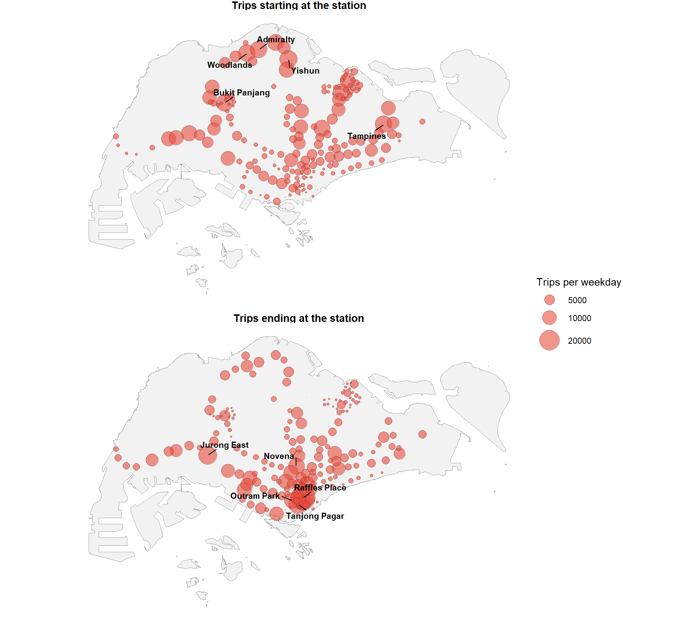
NoteAnalysis
- The largest circles for the trips starting are in the north (Woodlands, Admiralty, Yishun), in the north-west (Bukit Panjang) and in the east (Tampines). The circles in the south and the centre of the island are small.
- The largest circles for the trips ending are in the south centre, around Raffles Place and Tanjong Pagar. Jurong East and Novena also stand out.
The difference between the trips ending and the trips starting is mapped for each station. Blue stations send out more trips than they receive, and red stations receive more than they send out.
net_map <- ridership_map %>%
mutate(net = trips_to - trips_from) %>%
arrange(abs(net))
ggplot() +
geom_sf(data = sg_boundary, fill = "grey95", colour = "grey60", linewidth = 0.2) +
geom_sf(data = net_map, aes(size = abs(net), fill = net),
shape = 21, colour = "grey30", stroke = 0.2, alpha = 0.85) +
scale_fill_gradient2(low = "#2c7bb6", mid = "white", high = "#c0392b", midpoint = 0,
name = "Trips ending minus\ntrips starting") +
scale_size_area(max_size = 10, name = "Absolute difference") +
theme_void()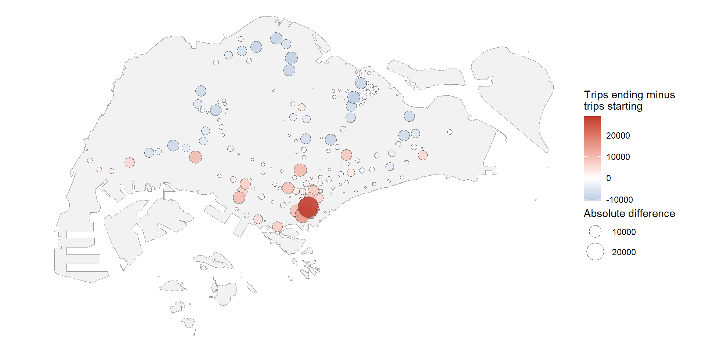
The share of the trips in the ten largest stations is calculated for each measure, together with the number of stations that appear in both groups of ten.
ridership_map %>%
st_drop_geometry() %>%
summarise(top10_from_share = round(sum(sort(trips_from, decreasing = TRUE)[1:10]) /
sum(trips_from), 3),
top10_to_share = round(sum(sort(trips_to, decreasing = TRUE)[1:10]) /
sum(trips_to), 3),
in_both_top10 = length(intersect(station_code[order(-trips_from)][1:10],
station_code[order(-trips_to)][1:10])))# A tibble: 1 × 3
top10_from_share top10_to_share in_both_top10
<dbl> <dbl> <int>
1 0.238 0.254 0
NoteAnalysis
- In the map of the difference, the stations in the north and the north-east are blue, which means that more trips start there than end there. The red circles, where more trips end than start, are concentrated in the south centre, with a few in the west and the centre. The largest red circle is in the south centre, where the map of trips ending has its largest circles.
- The ten largest stations out of 184 account for 0.238 of the trips starting and 0.254 of the trips ending. No station is in both groups of ten.
5.2 Largest Flows between Pairs of Stations
The 40 largest flows between pairs of stations are prepared with the coordinates and the names of both stations.
names_lookup <- stations_existing %>%
st_drop_geometry() %>%
select(station_code, station_name)
top_flows <- si_existing %>%
slice_max(trips, n = 40) %>%
left_join(station_xy %>% rename(x_o = x, y_o = y), by = c("origin" = "station_code")) %>%
left_join(station_xy %>% rename(x_d = x, y_d = y), by = c("destination" = "station_code")) %>%
left_join(names_lookup %>% rename(origin = station_code, origin_name = station_name),
by = "origin") %>%
left_join(names_lookup %>% rename(destination = station_code, destination_name = station_name),
by = "destination")The flows are drawn as straight lines between the stations, with an arrow pointing to the destination and the width showing the trips. Each destination is labelled once.
dest_labels <- top_flows %>%
distinct(destination_name, x_d, y_d)
ggplot() +
geom_sf(data = sg_boundary, fill = "grey95", colour = "grey60", linewidth = 0.2) +
geom_sf(data = stations_existing, size = 0.4, colour = "grey60") +
geom_segment(data = top_flows,
aes(x = x_o, y = y_o, xend = x_d, yend = y_d, linewidth = trips),
colour = "#c0392b", alpha = 0.55,
arrow = arrow(length = unit(2, "mm"), type = "closed")) +
geom_text_repel(data = dest_labels,
aes(x = x_d, y = y_d, label = destination_name),
size = 3, fontface = "bold", min.segment.length = 0,
box.padding = 0.5, max.overlaps = Inf) +
scale_linewidth(range = c(0.4, 2.5), name = "Trips per weekday") +
theme_void()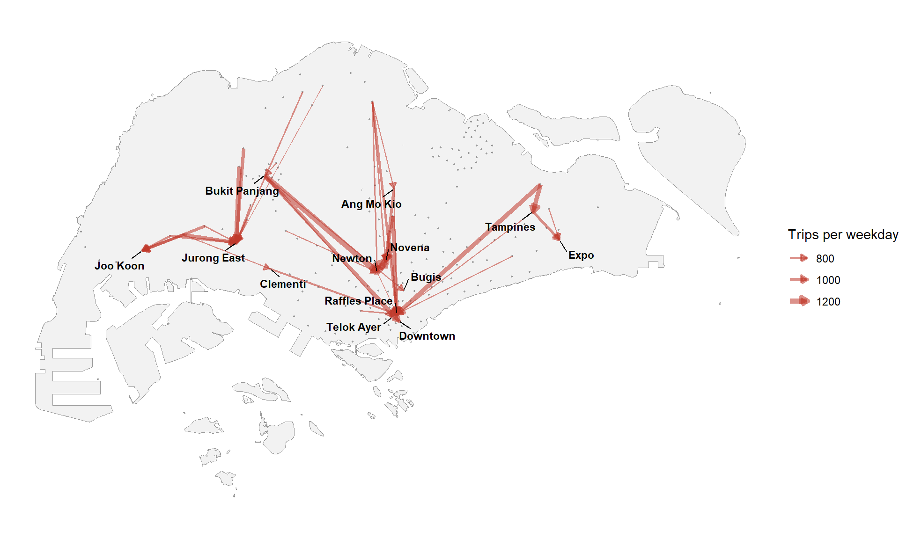
The ten largest flows are listed:
top_flows %>%
slice_head(n = 10) %>%
transmute(origin_name, destination_name, trips = round(trips), distance_m = round(distance))# A tibble: 10 × 4
origin_name destination_name trips distance_m
<chr> <chr> <dbl> <dbl>
1 Newton Novena 1358 1047
2 Bukit Panjang Newton 1288 11209
3 Pasir Ris Tampines 1154 2144
4 Choa Chu Kang Jurong East 1137 5743
5 Pasir Ris Raffles Place 1115 14665
6 Bishan Raffles Place 1019 7417
7 Toa Payoh Novena 1006 1412
8 Bukit Panjang Downtown 1006 14976
9 Yew Tee Jurong East 997 7137
10 Boon Lay Jurong East 958 4073
NoteAnalysis
- The 40 largest flows end at 13 stations: Joo Koon, Jurong East, Clementi and Bukit Panjang in the west, Ang Mo Kio, Newton and Novena in the centre, Bugis, Raffles Place, Telok Ayer and Downtown in the south, and Tampines and Expo in the east.
- The ten largest flows range from 958 to 1,358 trips per weekday. The largest is Newton to Novena.
- The distances of the ten flows range from 1,047 m to 14,976 m. Bukit Panjang to Downtown is the longest.
5.4 Attraction Variables and Trips Ending
The correlations of the attraction variables with the trips ending were shown in section 4.9.3. Scatter plots and rank correlations are added here, together with the distance to the city centre as a further variable. The distance is measured to Raffles Place (EW14/NS26) and stands in for the concentration of jobs, for which no data is available.
raffles <- station_xy %>% filter(station_code == "EW14/NS26")
nrow(raffles)[1] 1cbd_distance <- station_xy %>%
mutate(cbd_km = sqrt((x - raffles$x)^2 + (y - raffles$y)^2) / 1000) %>%
select(station_code, cbd_km)
destinations <- destinations %>%
mutate(cbd_km = cbd_distance$cbd_km[match(station_code, cbd_distance$station_code)])The trips ending at the existing stations are plotted against each variable, both on a log scale.
destinations %>%
filter(status == "Existing") %>%
pivot_longer(c(bus_stops, education, retail, health, cbd_km),
names_to = "variable", values_to = "value") %>%
mutate(variable = recode(variable,
bus_stops = "Bus stops (count + 1)",
education = "Education objects (count + 1)",
retail = "Retail objects (count + 1)",
health = "Health objects (count + 1)",
cbd_km = "Distance to the city centre (km + 1)")) %>%
ggplot(aes(x = value + 1, y = trips_to)) +
geom_point(alpha = 0.5) +
geom_smooth(method = "lm", se = FALSE, colour = "#c0392b") +
scale_x_log10() +
scale_y_log10() +
facet_wrap(~ variable, scales = "free_x") +
labs(x = "Value (log scale)", y = "Trips ending per weekday (log scale)") +
theme_minimal()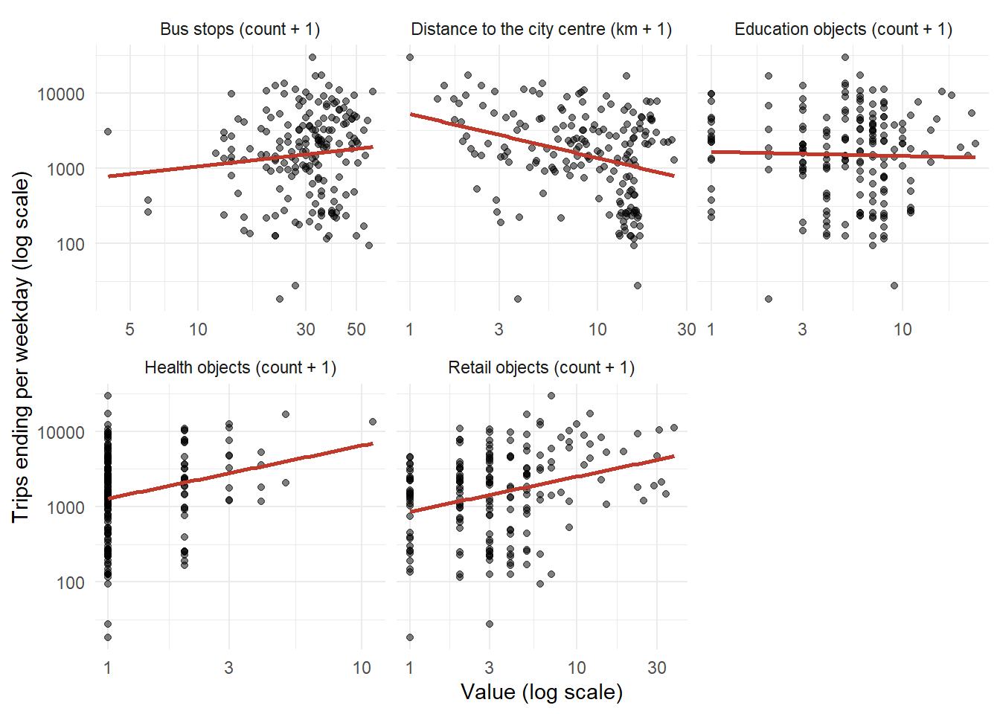
The rank correlation of each variable with the trips ending is calculated:
destinations %>%
filter(status == "Existing") %>%
summarise(across(c(bus_stops, education, retail, health, cbd_km),
~ round(cor(.x, trips_to, method = "spearman"), 3)))# A tibble: 1 × 5
bus_stops education retail health cbd_km
<dbl> <dbl> <dbl> <dbl> <dbl>
1 0.124 -0.028 0.287 0.191 -0.256
NoteAnalysis
- The rank correlation with the trips ending is positive for
retail(0.287),health(0.191), andbus_stops(0.124), and close to zero foreducation(−0.028). - The correlation with the distance to the city centre is negative (−0.256): the stations closer to the city centre receive more trips.
- In the plots, the fitted lines rise for
retail,healthand (slightly)bus_stops, fall for the distance to the city centre, and are almost flat foreducation. - The points are widely spread around every line, so no variable explains the trips ending on its own.
healthandeducationhave many stations with no objects in the catchment.
5.5 Residential Mass and Trips Starting
The correlation of the residential mass with the trips starting was shown in section 4.9.2. The rank correlation is calculated here as a check that does not depend on a few large stations:
origins %>%
filter(status == "Existing") %>%
summarise(spearman = round(cor(potential, trips_from, method = "spearman"), 2))# A tibble: 1 × 1
spearman
<dbl>
1 0.35The residential mass of the catchment (potential, the HDB footprint area) is plotted against the trips starting at each existing station.
origins %>%
filter(status == "Existing") %>%
ggplot(aes(x = potential / 1000, y = trips_from)) +
geom_point(alpha = 0.5) +
geom_smooth(method = "lm", se = FALSE, colour = "#c0392b") +
labs(x = "HDB footprint area in the catchment (thousand square metres)",
y = "Trips starting per weekday") +
theme_minimal()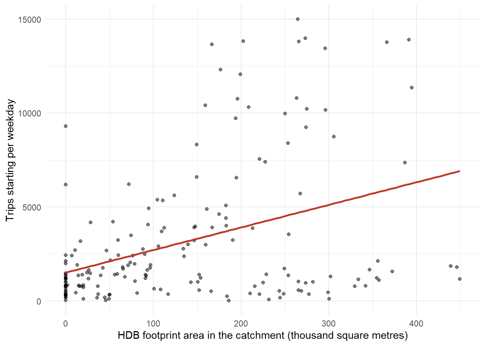
NoteAnalysis
- The rank correlation between the residential mass and the trips starting is 0.35, close to the Pearson correlation of 0.39 shown in section 4.9.2.
- In the plot, the fitted line rises from about 1,500 trips at an area of zero to about 7,000 trips at 450,000 square metres.
- The spread around the line is wide. Some stations with no HDB area in the catchment still have more than 5,000 trips starting.
6 Model Calibration
Nine models are compared. Each one gives every pair of stations a share of the trips starting at the origin. The models are built up in order: equal shares, the Huff model with fixed exponents, the Huff model with calibrated exponents, the multiplicative competitive interaction model with four attraction variables, the same model with the distance to the city centre, the same model with an exponential distance decay, and finally a term for competing destinations.
6.1 Measuring the Fit
The predicted trips of a pair are the trips starting at the origin multiplied by the share. Five measures compare predicted and observed trips: the squared correlation and the root mean square error over the pairs, the squared correlation and the weighted absolute percentage error (WAPE) of the trips ending at each station, and the negative log-likelihood of the observed trips, which is lower for a better fit.
fit_measures <- function(data, pred_share, label) {
pred <- data %>% mutate(pred_trips = trips_from * pred_share)
by_dest <- pred %>%
group_by(destination) %>%
summarise(obs = sum(trips), pred = sum(pred_trips), .groups = "drop")
tibble(model = label,
pair_r2 = round(cor(pred$trips, pred$pred_trips)^2, 3),
pair_rmse = round(sqrt(mean((pred$trips - pred$pred_trips)^2)), 2),
station_r2 = round(cor(by_dest$obs, by_dest$pred)^2, 3),
station_wape = round(sum(abs(by_dest$obs - by_dest$pred)) / sum(by_dest$obs), 3),
neg_loglik = round(-sum(data$trips * log(pred_share))))
}The share of a pair is the utility of the destination divided by the sum of the utilities of its origin. Two helpers add up and take the largest of the values of each origin.
group_sum <- function(x, group) as.numeric(rowsum(x, group)[group, 1])
group_max <- function(x, group) as.numeric(tapply(x, group, max)[group])The shares are calculated as logarithms. The largest utility of an origin is subtracted from every utility of that origin before the exponential is taken. The subtraction does not change the shares, because the same amount is removed from the utility of a destination and from the sum it is divided by. It prevents the exponential of a large utility from returning a value too large for R to store, which would stop the calibration.
log_shares <- function(utility, origin) {
centred <- utility - group_max(utility, origin)
centred - log(group_sum(exp(centred), origin))
}The variables used by the models are prepared. A count of zero is replaced by one before the logarithm. The attraction of a station for the Huff model is the sum of its four counts plus one.
si_existing <- si_existing %>%
mutate(cbd_km = destinations$cbd_km[match(destination, destinations$station_code)],
attraction = bus_stops + education + retail + health + 1,
ln_attr = log(attraction),
ln_bus = log(bus_stops + 1),
ln_edu = log(education + 1),
ln_retail = log(retail + 1),
ln_health = log(health + 1),
ln_cbd = log(cbd_km + 0.5),
ln_dist = log(distance),
dist_km = distance / 1000)
sum(is.na(si_existing$cbd_km))[1] 0
NoteAnalysis
No pair is missing the distance to the city centre.
6.3 Huff Model with Calibrated Exponents
The exponents are estimated by maximum likelihood: they are chosen so that the observed trips are most probable under the shares of the model. The distance is weighted either by a power function (decay = "power", the form of the Huff model) or by an exponential function (decay = "exp", with the distance in kilometres). The decay parameter is written as a positive number, so a larger value means a faster decay.
nll_si <- function(par, data, vars, decay = "power") {
k <- length(vars)
distance_term <- if (decay == "power") data$ln_dist else data$dist_km
utility <- as.numeric(as.matrix(data[, vars]) %*% par[1:k]) - par[k + 1] * distance_term
-sum(data$trips * log_shares(utility, data$origin))
}
predict_si <- function(par, data, vars, decay = "power") {
k <- length(vars)
distance_term <- if (decay == "power") data$ln_dist else data$dist_km
utility <- as.numeric(as.matrix(data[, vars]) %*% par[1:k]) - par[k + 1] * distance_term
exp(log_shares(utility, data$origin))
}
fit_si <- function(data, vars, decay = "power") {
start_decay <- if (decay == "power") 1 else 0.1
optim(par = c(rep(0.1, length(vars)), start_decay), fn = nll_si,
data = data, vars = vars, decay = decay,
method = "BFGS", control = list(maxit = 1000))
}The Huff model with the single attraction variable is calibrated with both distance functions. A convergence code of 0 means that the search for the best exponents ended successfully.
huff_cal <- fit_si(si_existing, "ln_attr", decay = "power")
huff_cal_exp <- fit_si(si_existing, "ln_attr", decay = "exp")
tibble(decay_shape = c("Power", "Exponential"),
attraction_exponent = round(c(huff_cal$par[1], huff_cal_exp$par[1]), 3),
decay_parameter = round(c(huff_cal$par[2], huff_cal_exp$par[2]), 3),
convergence = c(huff_cal$convergence, huff_cal_exp$convergence))# A tibble: 2 × 4
decay_shape attraction_exponent decay_parameter convergence
<chr> <dbl> <dbl> <int>
1 Power 0.458 0.586 0
2 Exponential 0.469 0.091 0The fit of both versions is measured:
si_existing <- si_existing %>%
mutate(p_huff_cal = predict_si(huff_cal$par, si_existing, "ln_attr", "power"),
p_huff_cal_exp = predict_si(huff_cal_exp$par, si_existing, "ln_attr", "exp"))
bind_rows(
fit_measures(si_existing, si_existing$p_huff_cal, "Huff, calibrated (power)"),
fit_measures(si_existing, si_existing$p_huff_cal_exp, "Huff, calibrated (exponential)"))# A tibble: 2 × 6
model pair_r2 pair_rmse station_r2 station_wape neg_loglik
<chr> <dbl> <dbl> <dbl> <dbl> <dbl>
1 Huff, calibrated (power) 0.161 52.1 0.005 0.831 2908426
2 Huff, calibrated (expone… 0.175 51.6 0.005 0.835 2901709
NoteAnalysis
- Both versions converge. The power version gives an attraction exponent of 0.458 and a distance exponent of 0.586. The exponential version gives an attraction exponent of 0.469 and a decay of 0.091 for each kilometre.
- Calibrating the exponents improves the fit over both benchmarks of section 6.2. The squared correlation over the pairs rises from 0.124 for equal shares to 0.161 for the power version and 0.175 for the exponential version, and the negative log-likelihood falls from 2,974,579 to 2,908,426 and 2,901,709.
- The exponential version fits the pairs slightly better than the power version, with a lower root mean square error (51.6 against 52.1) and a lower negative log-likelihood. The power version has the smaller error on the trips ending (0.831 against 0.835).
The distance exponent of the power version is also tested over a range. For each value, the attraction exponent that fits best is found.
lambda_grid <- seq(0.25, 2, by = 0.25)
lambda_profile <- tibble()
for (lambda in lambda_grid) {
best <- optimize(function(gamma) nll_si(c(gamma, lambda), si_existing, "ln_attr"),
interval = c(0, 2))
lambda_profile <- bind_rows(lambda_profile,
tibble(distance_exponent = lambda,
attraction_exponent = round(best$minimum, 3),
neg_loglik = round(best$objective)))
}
lambda_profile# A tibble: 8 × 3
distance_exponent attraction_exponent neg_loglik
<dbl> <dbl> <dbl>
1 0.25 0.5 2926538
2 0.5 0.47 2909688
3 0.75 0.434 2913224
4 1 0.392 2940480
5 1.25 0.346 2993995
6 1.5 0.3 3075084
7 1.75 0.254 3183758
8 2 0.21 3318845The negative log-likelihood is plotted against the distance exponent:
ggplot(lambda_profile, aes(distance_exponent, neg_loglik)) +
geom_line(colour = "#c0392b") +
geom_point(colour = "#c0392b") +
labs(x = "Distance exponent", y = "Negative log-likelihood (lower is better)") +
theme_minimal()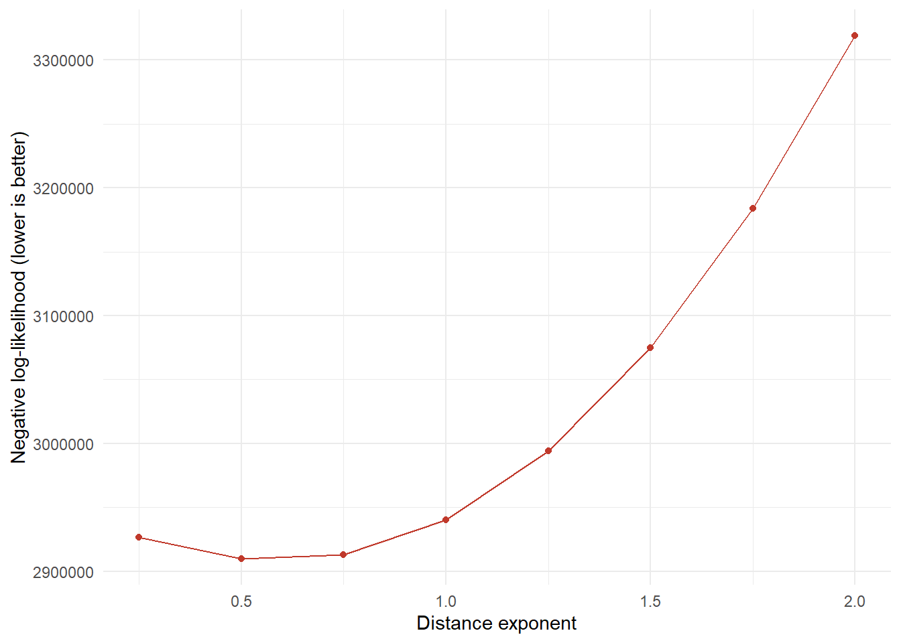
NoteAnalysis
- The attraction exponent is below 1 in both versions. A station with twice the attraction of another therefore does not receive twice the share.
- The profile of the distance exponent confirms that 2 is a poor choice. The negative log-likelihood is lowest between 0.5 and 0.75 (2,909,688 at 0.5) and rises steeply above 1, reaching 3,318,845 at 2. The attraction exponent that fits best also falls as the distance exponent rises.
- Neither version explains which stations receive the trips. The squared correlation of the trips ending stays at 0.005 and the weighted absolute percentage error above 0.83. A single attraction variable is not enough, which section 6.4 addresses.
6.4 Multiplicative Competitive Interaction Model
6.4.2 Fit by Maximum Likelihood
The same four attractions are estimated by maximum likelihood, which uses all pairs including those without trips.
vars4 <- c("ln_bus", "ln_edu", "ln_retail", "ln_health")
mci_ml <- fit_si(si_existing, vars4)
round(c(setNames(mci_ml$par[1:4], vars4), distance = mci_ml$par[5]), 3) ln_bus ln_edu ln_retail ln_health distance
0.429 -0.447 0.447 0.348 0.625 mci_ml$convergence[1] 0si_existing <- si_existing %>%
mutate(p_mci_ml = predict_si(mci_ml$par, si_existing, vars4))
fit_measures(si_existing, si_existing$p_mci_ml, "MCI, four attractions (ML)")# A tibble: 1 × 6
model pair_r2 pair_rmse station_r2 station_wape neg_loglik
<chr> <dbl> <dbl> <dbl> <dbl> <dbl>
1 MCI, four attractions (M… 0.221 50.2 0.125 0.777 2852132
NoteAnalysis
- The fit converges. The exponents are 0.429 for bus stops, −0.447 for education, 0.447 for retail and 0.348 for health, with a distance exponent of 0.625.
- The signs agree with the regression of section 6.4.1, and the negative coefficient of education appears again. The two methods differ most on bus stops (0.429 against 0.284) and retail (0.447 against 0.506).
- Estimating by maximum likelihood gives the lower negative log-likelihood of the two, 2,852,132 against 2,857,283, which is the measure it optimises. The regression is marginally better on the two squared correlations, 0.225 against 0.221 over the pairs and 0.133 against 0.125 for the trips ending.
- The two methods therefore agree closely. The maximum likelihood version is carried forward, because it uses all 33,672 pairs instead of only those with trips.
6.4.3 Adding the Distance to the City Centre
The distance to the city centre from section 5.4 is added as a fifth attraction variable.
vars5 <- c(vars4, "ln_cbd")
mci_cbd <- fit_si(si_existing, vars5)
round(c(setNames(mci_cbd$par[1:5], vars5), distance = mci_cbd$par[6]), 3) ln_bus ln_edu ln_retail ln_health ln_cbd distance
0.653 -0.419 0.164 0.382 -0.445 0.679 mci_cbd$convergence[1] 0si_existing <- si_existing %>%
mutate(p_mci_cbd = predict_si(mci_cbd$par, si_existing, vars5))
fit_measures(si_existing, si_existing$p_mci_cbd, "MCI + city centre (power decay)")# A tibble: 1 × 6
model pair_r2 pair_rmse station_r2 station_wape neg_loglik
<chr> <dbl> <dbl> <dbl> <dbl> <dbl>
1 MCI + city centre (power… 0.245 49.4 0.215 0.761 2825895
NoteAnalysis
- Adding the distance to the city centre gives the largest single improvement so far. The squared correlation of the trips ending rises from 0.125 to 0.215, and the weighted absolute percentage error falls from 0.777 to 0.761.
- The coefficient of the distance to the city centre is −0.445. A station further from the city centre receives a smaller share, with the four attraction variables held constant.
- The other coefficients change as well. Retail falls from 0.447 to 0.164 and bus stops rises from 0.429 to 0.653. Part of what retail measured in section 6.4.2 was the closeness of a station to the city centre.
- The negative coefficient of education remains, at −0.419.
6.4.4 Exponential Distance Decay
Section 5.3 shows that the exponential shape follows the share of a pair better than the power shape. The model with the city centre is calibrated again with an exponential decay.
mci_exp <- fit_si(si_existing, vars5, decay = "exp")
round(c(setNames(mci_exp$par[1:5], vars5), decay_per_km = mci_exp$par[6]), 3) ln_bus ln_edu ln_retail ln_health ln_cbd decay_per_km
0.694 -0.438 0.161 0.375 -0.459 0.109 mci_exp$convergence[1] 0si_existing <- si_existing %>%
mutate(p_mci_exp = predict_si(mci_exp$par, si_existing, vars5, "exp"))
fit_measures(si_existing, si_existing$p_mci_exp, "MCI + city centre (exponential decay)")# A tibble: 1 × 6
model pair_r2 pair_rmse station_r2 station_wape neg_loglik
<chr> <dbl> <dbl> <dbl> <dbl> <dbl>
1 MCI + city centre (expon… 0.27 48.6 0.218 0.761 2817923
NoteAnalysis
- The exponential decay fits better than the power decay on three of the five measures. The squared correlation over the pairs rises from 0.245 to 0.270, the root mean square error falls from 49.4 to 48.6, and the negative log-likelihood falls from 2,825,895 to 2,817,923. The error on the trips ending is the same at 0.761.
- The decay is 0.109 for each kilometre of distance. The two decay parameters are not directly comparable, because one applies to the logarithm of the distance and the other to the distance itself. The comparison rests on the fit measures.
- The attraction exponents barely change, at 0.694 for bus stops, −0.438 for education, 0.161 for retail, 0.375 for health and −0.459 for the distance to the city centre. The result does not depend on the shape of the decay.
- This is the best fit of the models so far, and it agrees with the comparison of decay shapes in section 5.3, where the exponential shape fitted the band averages best.
6.5 Competing Destinations
A destination surrounded by many other attractive stations competes for the same trips. This is the theory of competing destinations (Fotheringham, 1983). The access of a station to the others is the sum of their attraction divided by the distance. It is calculated for each station from its pairs as an origin, and its logarithm is added as a further variable to the exponential model.
comp_access <- si_existing %>%
group_by(origin) %>%
summarise(access = sum(attraction / distance), .groups = "drop")
si_existing <- si_existing %>%
mutate(ln_comp = log(comp_access$access[match(destination, comp_access$origin)]))
sum(is.na(si_existing$ln_comp))[1] 0The model is fitted:
vars6 <- c(vars5, "ln_comp")
mci_comp <- fit_si(si_existing, vars6, decay = "exp")
round(c(setNames(mci_comp$par[1:6], vars6), decay_per_km = mci_comp$par[7]), 3) ln_bus ln_edu ln_retail ln_health ln_cbd ln_comp
0.605 -0.032 0.367 0.435 -1.360 -3.204
decay_per_km
0.122 mci_comp$convergence[1] 0si_existing <- si_existing %>%
mutate(p_mci_comp = predict_si(mci_comp$par, si_existing, vars6, "exp"))
fit_measures(si_existing, si_existing$p_mci_comp, "+ competing destinations (exponential decay)")# A tibble: 1 × 6
model pair_r2 pair_rmse station_r2 station_wape neg_loglik
<chr> <dbl> <dbl> <dbl> <dbl> <dbl>
1 + competing destinations… 0.415 43.5 0.537 0.588 2725116si_existing %>%
distinct(destination, ln_comp, ln_cbd) %>%
summarise(stations = n(),
pearson = round(cor(ln_comp, ln_cbd), 2))# A tibble: 1 × 2
stations pearson
<int> <dbl>
1 184 -0.68
NoteAnalysis
- The competing destinations term gives the largest improvement. The squared correlation over the pairs rises from 0.270 to 0.415, the squared correlation of the trips ending from 0.218 to 0.537, and the weighted absolute percentage error falls from 0.761 to 0.588.
- Its coefficient is −3.204. A station with good access to many other attractive stations receives a smaller share, because it loses trips to its neighbours.
- The other coefficients change sharply. The coefficient of the distance to the city centre grows from −0.459 to −1.360, and the coefficient of education moves from −0.438 to −0.032. The access term and the distance to the city centre both measure how central a station is, and their correlation is −0.68. The model splits the effect of centrality between the two, which makes each coefficient hard to read on its own.
6.6 Spatial Pattern of the Residuals
The exponential model without the competing term is checked for a spatial pattern in its errors. The residual of a station is the observed minus the predicted trips ending, divided by the square root of the predicted trips.
resid_table <- si_existing %>%
mutate(pred_trips = trips_from * p_mci_exp) %>%
group_by(destination) %>%
summarise(obs = sum(trips), pred = sum(pred_trips), .groups = "drop") %>%
mutate(resid = (obs - pred) / sqrt(pred))
station_resid <- stations_existing %>%
mutate(resid = resid_table$resid[match(station_code, resid_table$destination)])
sum(is.na(station_resid$resid))[1] 0The residuals are mapped:
resid_labels <- bind_rows(station_resid %>% slice_max(resid, n = 5),
station_resid %>% slice_min(resid, n = 5))
ggplot() +
geom_sf(data = sg_boundary, fill = "grey95", colour = "grey60", linewidth = 0.2) +
geom_sf(data = station_resid, aes(colour = resid), size = 2.5) +
geom_text_repel(data = resid_labels,
aes(label = station_name, geometry = geometry),
stat = "sf_coordinates", size = 3, fontface = "bold",
min.segment.length = 0, box.padding = 0.5, max.overlaps = Inf) +
scale_colour_gradient2(low = "#2c7bb6", mid = "grey85", high = "#c0392b", midpoint = 0,
name = "Residual") +
theme_void()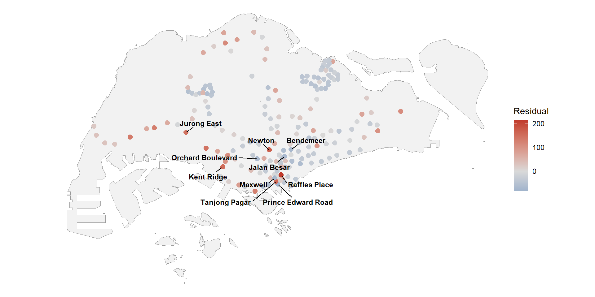
bind_rows(resid_table %>% slice_max(resid, n = 5),
resid_table %>% slice_min(resid, n = 5)) %>%
left_join(names_lookup, by = c("destination" = "station_code")) %>%
transmute(station_name, observed = round(obs), predicted = round(pred),
residual = round(resid, 1))# A tibble: 10 × 4
station_name observed predicted residual
<chr> <dbl> <dbl> <dbl>
1 Raffles Place 29622 9101 215.
2 Newton 10691 2403 169.
3 Tanjong Pagar 17063 5473 157.
4 Kent Ridge 10862 2810 152.
5 Jurong East 16731 5813 143.
6 Prince Edward Road 532 7812 -82.4
7 Maxwell 2271 9414 -73.6
8 Bendemeer 1835 8113 -69.7
9 Jalan Besar 1212 7035 -69.4
10 Orchard Boulevard 1179 6973 -69.4Moran’s I of the residuals is calculated with sfdep, with the six nearest stations as neighbours:
nb <- st_knn(station_resid$geometry, k = 6)
wt <- st_weights(nb, style = "W")
global_moran_test(station_resid$resid, nb, wt)
Moran I test under randomisation
data: x
weights: listw
Moran I statistic standard deviate = 6.8713, p-value = 3.182e-12
alternative hypothesis: greater
sample estimates:
Moran I statistic Expectation Variance
0.262958988 -0.005464481 0.001526048 global_moran_perm(station_resid$resid, nb, wt, nsim = 499)
Monte-Carlo simulation of Moran I
data: x
weights: listw
number of simulations + 1: 500
statistic = 0.26296, observed rank = 500, p-value < 2.2e-16
alternative hypothesis: two.sided
NoteAnalysis
- The residuals are not spread at random across the island. Moran’s I is 0.263 against an expectation of −0.005, with a p-value of 3.182e-12. The permutation test ranks the observed value 500th of 500, which gives the same conclusion.
- The model misses most at the stations with the most arrivals. It predicts 9,101 trips ending at Raffles Place against 29,622 observed, 5,473 at Tanjong Pagar against 17,063, and 5,813 at Jurong East against 16,731.
- The largest errors in the other direction are at small stations near the city centre. The model predicts 7,812 trips ending at Prince Edward Road against 532 observed, and 9,414 at Maxwell against 2,271.
- Both groups lie in the south centre of the island. The distance to the city centre raises the predicted arrivals of every station near the centre, and the model cannot separate a major employment centre from a small station a few hundred metres away. The attraction variables count facilities in a catchment, and no variable in the data counts jobs.
6.7 Sensitivity to the Unstable Stations
The model is fitted again without the 16 stations flagged as unstable in section 4.2.6.
si_stable <- si_existing %>%
filter(!origin %in% unstable_stations$station_code,
!destination %in% unstable_stations$station_code)
nrow(si_stable)[1] 28056mci_stable <- fit_si(si_stable, vars5, decay = "exp")
sensitivity <- rbind(all_stations = mci_exp$par, without_unstable = mci_stable$par)
colnames(sensitivity) <- c(vars5, "decay_per_km")
round(sensitivity, 3) ln_bus ln_edu ln_retail ln_health ln_cbd decay_per_km
all_stations 0.694 -0.438 0.161 0.375 -0.459 0.109
without_unstable 0.793 -0.507 0.173 0.355 -0.506 0.108
NoteAnalysis
- Removing the 16 unstable stations leaves 168 stations and 28,056 pairs.
- The parameters barely move. The decay goes from 0.109 to 0.108 for each kilometre, and every coefficient keeps its sign. The largest changes are the bus stop exponent, from 0.694 to 0.793, and the education exponent, from −0.438 to −0.507.
- The model therefore does not rest on the 16 stations, and they are kept in the calibration.
6.8 The Chosen Model
The nine models are compared in one table:
results <- bind_rows(
fit_measures(si_existing, si_existing$p_equal, "Equal shares"),
fit_measures(si_existing, si_existing$p_huff_fixed, "Huff, fixed (1, 2)"),
fit_measures(si_existing, si_existing$p_huff_cal, "Huff, calibrated (power)"),
fit_measures(si_existing, si_existing$p_huff_cal_exp, "Huff, calibrated (exponential)"),
fit_measures(si_existing, si_existing$p_mci, "MCI, four attractions (regression)"),
fit_measures(si_existing, si_existing$p_mci_ml, "MCI, four attractions (ML)"),
fit_measures(si_existing, si_existing$p_mci_cbd, "MCI + city centre (power decay)"),
fit_measures(si_existing, si_existing$p_mci_exp, "MCI + city centre (exponential decay)"),
fit_measures(si_existing, si_existing$p_mci_comp, "+ competing destinations (exponential decay)"))
results# A tibble: 9 × 6
model pair_r2 pair_rmse station_r2 station_wape neg_loglik
<chr> <dbl> <dbl> <dbl> <dbl> <dbl>
1 Equal shares 0.124 53.2 0.044 0.837 2974579
2 Huff, fixed (1, 2) 0.044 104. 0 0.901 3340452
3 Huff, calibrated (power) 0.161 52.1 0.005 0.831 2908426
4 Huff, calibrated (expone… 0.175 51.6 0.005 0.835 2901709
5 MCI, four attractions (r… 0.225 50.0 0.133 0.775 2857283
6 MCI, four attractions (M… 0.221 50.2 0.125 0.777 2852132
7 MCI + city centre (power… 0.245 49.4 0.215 0.761 2825895
8 MCI + city centre (expon… 0.27 48.6 0.218 0.761 2817923
9 + competing destinations… 0.415 43.5 0.537 0.588 2725116
NoteAnalysis
- The fit improves at every step of the ladder except the fixed Huff model, which is the worst of the nine. The squared correlation over the pairs rises from 0.124 for equal shares to 0.270 for the exponential model with the city centre, and the squared correlation of the trips ending from 0.044 to 0.218.
- The two largest gains come from giving each attraction variable its own exponent and from adding the distance to the city centre. The first raises the squared correlation of the trips ending from 0.005 to 0.125, and the second from 0.125 to 0.215.
- The exponential decay is better than the power decay in both places it is tested, with the single attraction variable (0.175 against 0.161) and with the five variables (0.270 against 0.245).
- The competing destinations model is the best of the nine on every measure.
The parameters of the chosen model, the exponential model with the city centre, are collected.
final_par <- setNames(mci_exp$par, c(vars5, "decay_per_km"))
round(final_par, 3) ln_bus ln_edu ln_retail ln_health ln_cbd decay_per_km
0.694 -0.438 0.161 0.375 -0.459 0.109 Five-fold validation is done by origin. Every pair of an origin falls in the same fold. The model is fitted on four fifths of the origins and used to predict the shares of the remaining fifth.
origin_folds <- tibble(origin = unique(si_existing$origin)) %>%
mutate(fold = sample(rep(1:5, length.out = n())))
si_existing <- si_existing %>%
mutate(fold = origin_folds$fold[match(origin, origin_folds$origin)],
p_cv = NA_real_)
for (f in 1:5) {
train <- si_existing %>% filter(fold != f)
test_rows <- si_existing$fold == f
fit <- fit_si(train, vars5, decay = "exp")
si_existing$p_cv[test_rows] <- predict_si(fit$par, si_existing[test_rows, ], vars5, "exp")
}
sum(is.na(si_existing$p_cv))[1] 0The fit of the chosen model is compared on the data it was fitted on and on the held-out origins.
bind_rows(
fit_measures(si_existing, si_existing$p_mci_exp, "In sample"),
fit_measures(si_existing, si_existing$p_cv, "Five-fold by origin"))# A tibble: 2 × 6
model pair_r2 pair_rmse station_r2 station_wape neg_loglik
<chr> <dbl> <dbl> <dbl> <dbl> <dbl>
1 In sample 0.27 48.6 0.218 0.761 2817923
2 Five-fold by origin 0.269 48.6 0.218 0.761 2818784
NoteAnalysis
- The chosen model predicts the held-out origins as well as the origins it was fitted on. The squared correlation over the pairs is 0.269 against 0.270 in sample, and the root mean square error, the squared correlation of the trips ending and the weighted absolute percentage error are identical to three decimal places.
- The five parameters are therefore not fitted to the particular origins in the data, and the model can be applied to stations whose trips are not observed.
- The level of accuracy remains modest. The model accounts for 0.218 of the variation in the trips ending, leaves a weighted absolute percentage error of 0.761, and leaves a spatial pattern in its errors, as section 6.6 shows. The predicted ridership of the proposed stations is an indication of the order of magnitude rather than a forecast.
7 Ridership of Existing Stations
The model distributes the trips starting at an origin among the possible destinations. The trips starting at an existing station are taken from the data and are reproduced exactly. The quantity the model predicts is the number of trips ending at each station, which is the sum over all origins of the trips starting there multiplied by the share of the pair.
7.1 Predicted and Observed Arrivals
The predicted trips ending at each station are added up and compared with the observed trips:
station_pred <- si_existing %>%
mutate(pred_trips = trips_from * p_mci_exp) %>%
group_by(destination) %>%
summarise(observed = sum(trips), predicted = sum(pred_trips), .groups = "drop") %>%
left_join(names_lookup, by = c("destination" = "station_code")) %>%
mutate(ratio = predicted / observed)
station_pred %>%
summarise(stations = n(),
total_observed = round(sum(observed)),
total_predicted = round(sum(predicted)))# A tibble: 1 × 3
stations total_observed total_predicted
<int> <dbl> <dbl>
1 184 570993 570993The agreement between the two is measured by the ordinary correlation, by the rank correlation and by the ratio of the predicted to the observed trips:
station_pred %>%
summarise(pearson = round(cor(observed, predicted), 3),
spearman = round(cor(observed, predicted, method = "spearman"), 3),
median_ratio = round(median(ratio), 2),
between_half_and_double = sum(ratio > 0.5 & ratio < 2))# A tibble: 1 × 4
pearson spearman median_ratio between_half_and_double
<dbl> <dbl> <dbl> <int>
1 0.467 0.346 1.4 75The two measures are plotted against each other. A station on the dashed line is predicted exactly:
scatter_labels <- station_pred %>% slice_max(observed, n = 5)
ggplot(station_pred, aes(observed, predicted)) +
geom_abline(slope = 1, intercept = 0, colour = "grey50", linetype = "dashed") +
geom_point(alpha = 0.6, colour = "#c0392b") +
geom_text_repel(data = scatter_labels, aes(label = station_name),
size = 3, fontface = "bold", min.segment.length = 0,
box.padding = 0.5, max.overlaps = Inf) +
scale_x_log10() +
scale_y_log10() +
labs(x = "Observed trips ending per weekday (log scale)",
y = "Predicted trips ending per weekday (log scale)") +
theme_minimal()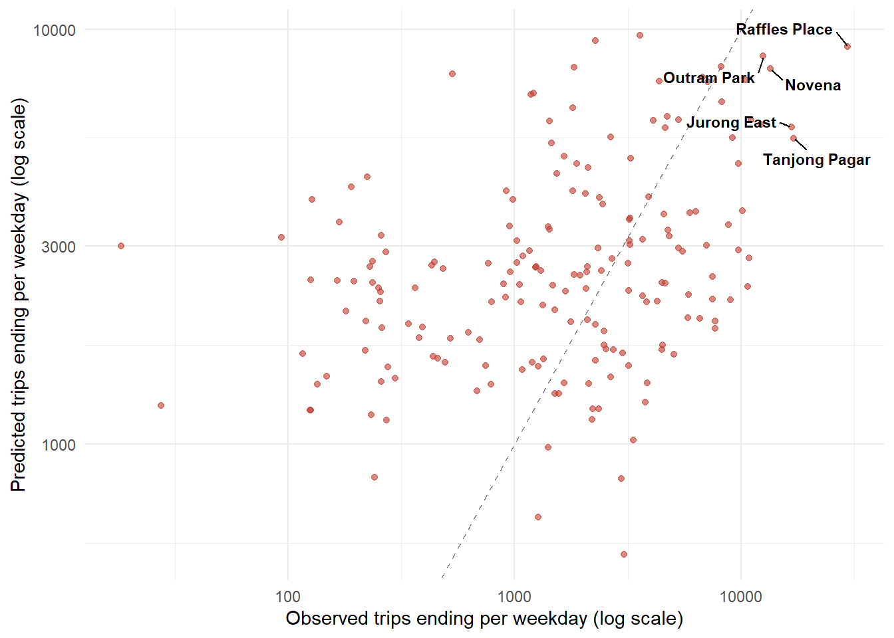
NoteAnalysis
- The points do not follow the dashed line. Stations with few observed arrivals lie above it, where the model predicts more trips than were observed. Stations with many observed arrivals lie below it, where the model predicts fewer.
- The predicted values also cover a much narrower range than the observed ones. The observed arrivals run from under 100 to nearly 30,000, while almost every prediction falls between 1,000 and 10,000.
The ten stations with the most observed arrivals are listed with their predictions.
station_pred %>%
slice_max(observed, n = 10) %>%
transmute(station_name, observed = round(observed), predicted = round(predicted),
ratio = round(ratio, 2))# A tibble: 10 × 4
station_name observed predicted ratio
<chr> <dbl> <dbl> <dbl>
1 Raffles Place 29622 9101 0.31
2 Tanjong Pagar 17063 5473 0.32
3 Jurong East 16731 5813 0.35
4 Novena 13461 8050 0.6
5 Outram Park 12562 8633 0.69
6 Downtown 12303 5897 0.48
7 Orchard 11058 6054 0.55
8 Kent Ridge 10862 2810 0.26
9 Newton 10691 2403 0.22
10 Bugis 10480 7550 0.72
NoteAnalysis
- Every one of the 10 stations with the most observed arrivals is under-predicted. The ratios range from 0.22 at Newton to 0.72 at Bugis.
The two measures are mapped side by side:
pred_map <- stations_existing %>%
left_join(station_pred %>% select(destination, observed, predicted),
by = c("station_code" = "destination")) %>%
pivot_longer(c(observed, predicted), names_to = "measure", values_to = "trips") %>%
mutate(measure = factor(measure,
levels = c("observed", "predicted"),
labels = c("Observed trips ending", "Predicted trips ending"))) %>%
arrange(measure, desc(trips))
ggplot() +
geom_sf(data = sg_boundary, fill = "grey95", colour = "grey60", linewidth = 0.2) +
geom_sf(data = pred_map, aes(size = trips),
shape = 21, fill = "#e74c3c", colour = "#7f1d1d", stroke = 0.3, alpha = 0.6) +
scale_size_area(max_size = 12, breaks = c(5000, 10000, 20000, 30000),
name = "Trips per weekday") +
facet_wrap(~ measure, ncol = 1) +
theme_void() +
theme(strip.text = element_text(face = "bold", size = 11))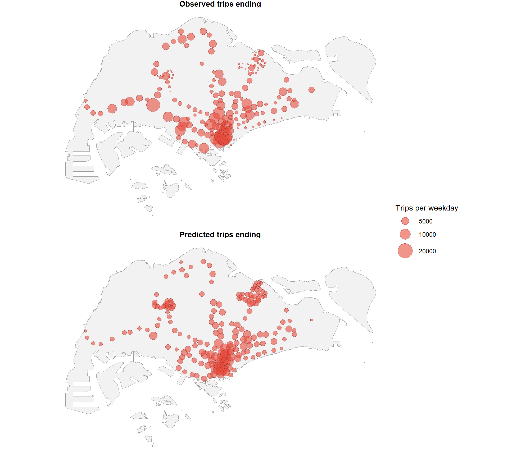
NoteAnalysis
- The two maps show the same pattern. In the observed panel, a few very large circles stand out in the south centre and most of the other circles are small. In the predicted panel, the circles are much closer in size, and no station stands out.
7.2 Accuracy by Size of Station
The stations are divided into four groups of equal size by their observed arrivals. The middle station of each group is compared.
station_pred %>%
mutate(group = ntile(observed, 4)) %>%
group_by(group) %>%
summarise(stations = n(),
median_observed = round(median(observed)),
median_predicted = round(median(predicted)),
median_ratio = round(median(ratio), 2),
.groups = "drop")# A tibble: 4 × 5
group stations median_observed median_predicted median_ratio
<int> <int> <dbl> <dbl> <dbl>
1 1 46 246 2037 9.3
2 2 46 1242 2518 2.31
3 3 46 2598 2462 0.9
4 4 46 7109 3485 0.52The five stations whose arrivals are most over-predicted are listed:
station_pred %>%
slice_max(ratio, n = 5) %>%
transmute(station_name, observed = round(observed), predicted = round(predicted),
ratio = round(ratio, 1))# A tibble: 5 × 4
station_name observed predicted ratio
<chr> <dbl> <dbl> <dbl>
1 Keppel 18 3000 164.
2 Teck Lee 28 1239 45.1
3 Senja 94 3155 33.7
4 Petir 128 3889 30.5
5 Cantonment 191 4169 21.9
NoteAnalysis
- The model pulls every station towards the middle of the range. The quietest quarter of stations has a middle value of 246 observed arrivals against 2,037 predicted, a ratio of 9.3. The busiest quarter has 7,109 observed against 3,485 predicted, a ratio of 0.52.
- Only the third quarter is predicted well, with a ratio of 0.90.
- The largest errors are at small stations. The model predicts 3,000 trips ending at Keppel against 18 observed, and 1,239 at Teck Lee against 28.
- The attraction variables count facilities within 800 m of a station. A quiet station in a built-up area has a catchment much like that of a busy one, and nothing in the data separates the two. The predicted ridership of a proposed station is therefore an indication of the order of magnitude. A station that will in fact be quiet is likely to be over-predicted.
8 Ridership of the Proposed Stations
The model distributes the trips starting at an origin. A proposed station has no observed trips, and hence its trips starting are estimated before the model can be applied.
8.1 Residential Demand of Each Station
Each HDB building is shared among the stations by a Huff model. A building gives most of its area to the station nearest to it, and a building between two stations splits its area between them. The distance from every building to every station is calculated first.
hdb_dist <- st_distance(hdb_points, stations_all)
hdb_dist_km <- matrix(as.numeric(hdb_dist), nrow = nrow(hdb_points)) / 1000
dim(hdb_dist_km)[1] 13436 213The demand of a station is the HDB area assigned to it, scaled so that the total matches the observed trips. The weight of a station falls with the distance to the building.
assign_demand <- function(beta, dist_km, area, total) {
weight <- exp(-beta * dist_km)
prob <- weight / rowSums(weight)
share <- colSums(area * prob)
total * share / sum(share)
}The decay is calibrated on the existing stations, by choosing the value that comes closest to the observed trips starting.
existing_cols <- which(stations_all$status == "Existing")
observed_from <- ridership$trips_from[match(stations_all$station_code[existing_cols],
ridership$station_code)]
total_trips <- sum(observed_from)
sse_beta <- function(beta) {
sum((assign_demand(beta, hdb_dist_km[, existing_cols], hdb_points$area_m2, total_trips) -
observed_from)^2)
}
beta_fit <- optimize(sse_beta, interval = c(0.2, 5))
round(beta_fit$minimum, 3)[1] 1.469
NoteAnalysis
- The calibrated decay is 1.469 for each kilometre. A building 500 m from a station gives it about twice the weight it gives a station 1 km away.
The estimated demand is compared with the observed trips starting:
origin_check <- tibble(
station_code = stations_all$station_code[existing_cols],
observed = observed_from,
estimated = assign_demand(beta_fit$minimum, hdb_dist_km[, existing_cols],
hdb_points$area_m2, total_trips)) %>%
mutate(ratio = estimated / observed)
origin_check %>%
summarise(pearson = round(cor(observed, estimated), 3),
spearman = round(cor(observed, estimated, method = "spearman"), 3),
median_ratio = round(median(ratio), 2),
between_half_and_double = sum(ratio > 0.5 & ratio < 2))# A tibble: 1 × 4
pearson spearman median_ratio between_half_and_double
<dbl> <dbl> <dbl> <int>
1 0.744 0.606 1.02 95ggplot(origin_check, aes(observed, estimated)) +
geom_abline(slope = 1, intercept = 0, colour = "grey50", linetype = "dashed") +
geom_point(alpha = 0.6, colour = "#2c7bb6") +
scale_x_log10() +
scale_y_log10() +
labs(x = "Observed trips starting per weekday (log scale)",
y = "Estimated residential demand (log scale)") +
theme_minimal()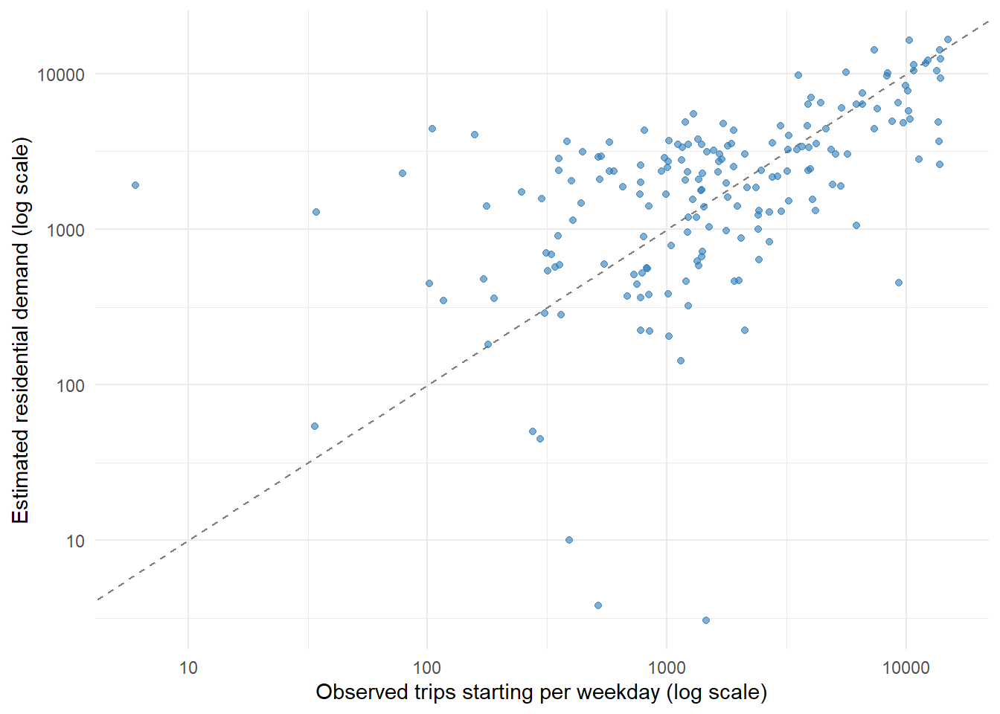
The five stations whose demand is most under-estimated are listed:
origin_check %>%
left_join(names_lookup, by = "station_code") %>%
slice_min(ratio, n = 5) %>%
transmute(station_name, observed = round(observed), estimated = round(estimated),
ratio = round(ratio, 2))# A tibble: 5 × 4
station_name observed estimated ratio
<chr> <dbl> <dbl> <dbl>
1 Tuas Link 1465 3 0
2 Tuas West Road 519 4 0.01
3 Tuas Crescent 391 10 0.03
4 Newton 9304 450 0.05
5 Stevens 2116 224 0.11The same assignment is applied to all 213 stations:
origin_all <- stations_all %>%
st_drop_geometry() %>%
select(station_code, station_name, status) %>%
mutate(demand = assign_demand(beta_fit$minimum, hdb_dist_km,
hdb_points$area_m2, total_trips))
origin_all %>%
group_by(status) %>%
summarise(stations = n(),
total_demand = round(sum(demand)),
median_demand = round(median(demand)),
.groups = "drop")# A tibble: 2 × 4
status stations total_demand median_demand
<chr> <int> <dbl> <dbl>
1 Existing 184 481060 2195
2 Proposed 29 89933 3108
NoteAnalysis
- The estimated demand matches the observed trips starting far better than the HDB area in the 800m catchment, which section 4.9.2 compares. The correlation rises from 0.39 to 0.744. The median ratio of the estimated to the observed demand is 1.02, and 95 of the 184 stations fall between half and double the observed value.
- The estimate is poor where the residents do not live in HDB flats. The three stations on the Tuas section serve industrial areas with no HDB housing nearby, and the estimate for Tuas Link is 3 trips against 1,465 observed.
- The estimate is also poor at interchanges that residents reach by another line rather than on foot. Newton is estimated at 450 against 9,304 observed, and Stevens at 224 against 2,116.
- Across the 213 stations, the 29 proposed stations are given 89,933 trips, with a median demand of 3,108 against 2,195 for the existing stations. The proposed stations sit in areas with more HDB housing than the average existing station.
8.2 Trips Starting after the New Lines Open
A new station draws its residents from the stations around it. The residential demand of section 8.1 is therefore estimated twice: once over the 184 existing stations and once over all 213. The ratio of the two gives the change in the residential demand of each existing station.
demand_before <- assign_demand(beta_fit$minimum, hdb_dist_km[, existing_cols],
hdb_points$area_m2, total_trips)
demand_change <- tibble(
station_code = stations_all$station_code[existing_cols],
demand_before = demand_before,
demand_after = origin_all$demand[existing_cols]) %>%
mutate(factor = demand_after / demand_before)
summary(demand_change$factor) Min. 1st Qu. Median Mean 3rd Qu. Max.
0.2494 0.8858 0.9853 0.9025 0.9988 1.0000
NoteAnalysis
- No existing station gains residential demand, since the largest ratio is 1.0000. A new station can only take assigned area from the stations around it.
- Half of the existing stations lose less than 1.5 per cent of their demand, with a median ratio of 0.9853. The most affected station keeps only a quarter of its demand, with a ratio of 0.2494.
The trips starting at an existing station are the observed trips multiplied by this ratio, so the observed level is kept and only the change comes from the model. A proposed station takes its assigned demand. The total is then rescaled to the observed total, which holds the new lines to redistributing trips rather than generating them:
trips_start <- origin_all %>%
mutate(observed_from = ridership$trips_from[match(station_code, ridership$station_code)],
factor = demand_change$factor[match(station_code, demand_change$station_code)],
trips_from_new = if_else(status == "Existing", observed_from * factor, demand)) %>%
mutate(trips_from_new = trips_from_new * total_trips / sum(trips_from_new))
trips_start %>%
group_by(status) %>%
summarise(stations = n(),
total = round(sum(trips_from_new)),
median = round(median(trips_from_new)),
.groups = "drop")# A tibble: 2 × 4
status stations total median
<chr> <int> <dbl> <dbl>
1 Existing 184 482435 1354
2 Proposed 29 88558 3061
NoteAnalysis
- 88,558 of the 570,993 trips start at the 29 proposed stations, which is about 16 per cent of the morning peak. The trips starting at the existing stations fall from 570,993 to 482,435.
8.3 Predicted Ridership of the Proposed Stations
The chosen model of section 6.8 is applied to all 45,156 pairs of the 213 stations. The variables are prepared in the same way as for the existing stations:
si_all <- si_all %>%
mutate(cbd_km = destinations$cbd_km[match(destination, destinations$station_code)],
ln_bus = log(bus_stops + 1),
ln_edu = log(education + 1),
ln_retail = log(retail + 1),
ln_health = log(health + 1),
ln_cbd = log(cbd_km + 0.5),
ln_dist = log(distance),
dist_km = distance / 1000,
trips_from_new = trips_start$trips_from_new[match(origin, trips_start$station_code)])
sum(is.na(si_all$ln_cbd))[1] 0sum(is.na(si_all$trips_from_new))[1] 0The shares of every pair are predicted and turned into trips.
si_all <- si_all %>%
mutate(p_pred = predict_si(mci_exp$par, si_all, vars5, "exp"),
pred_trips = trips_from_new * p_pred)
si_all %>%
group_by(origin) %>%
summarise(total = sum(p_pred)) %>%
summarise(smallest = round(min(total), 6), largest = round(max(total), 6))# A tibble: 1 × 2
smallest largest
<dbl> <dbl>
1 1 1The ridership of a station is the trips starting there plus the trips ending there:
pred_all <- si_all %>%
group_by(destination) %>%
summarise(arriving = sum(pred_trips), .groups = "drop") %>%
left_join(trips_start %>% select(station_code, station_name, status, trips_from_new),
by = c("destination" = "station_code")) %>%
left_join(stations_proposed %>% st_drop_geometry() %>% select(station_code, line),
by = c("destination" = "station_code")) %>%
rename(starting = trips_from_new) %>%
mutate(ridership = starting + arriving)The predictions are summarised by line:
pred_all %>%
filter(status == "Proposed") %>%
group_by(line) %>%
summarise(stations = n(),
total_starting = round(sum(starting)),
total_arriving = round(sum(arriving)),
total_ridership = round(sum(ridership)),
median_ridership = round(median(ridership)),
.groups = "drop")# A tibble: 2 × 6
line stations total_starting total_arriving total_ridership median_ridership
<chr> <int> <dbl> <dbl> <dbl> <dbl>
1 CRL 8 36166 15670 51835 6871
2 JRL 21 52392 35941 88333 4528
NoteAnalysis
- The 8 Cross Island Line stations are predicted 51,835 trips per weekday in total, of which 36,166 start at them and 15,670 end at them. The 21 Jurong Region Line stations are predicted 88,333 trips, of which 52,392 start and 35,941 end.
- The Cross Island Line stations are busier station for station, with a median of 6,871 against 4,528.
All 29 proposed stations are listed:
pred_all %>%
filter(status == "Proposed") %>%
arrange(desc(ridership)) %>%
transmute(station_name, line,
starting = round(starting),
arriving = round(arriving),
ridership = round(starting) + round(arriving)) %>%
print(n = 29)# A tibble: 29 × 5
station_name line starting arriving ridership
<chr> <chr> <dbl> <dbl> <dbl>
1 Tampines North CRL 9603 2333 11936
2 Pasir Ris East CRL 8180 1346 9526
3 Serangoon North CRL 5138 2800 7938
4 Teck Ghee CRL 4745 3016 7761
5 Tengah Park JRL 4768 2399 7167
6 Tengah Plantation JRL 5109 1981 7090
7 Toh Guan JRL 3718 3212 6930
8 Choa Chu Kang West JRL 3728 2481 6209
9 Bukit Batok West JRL 4321 1841 6162
10 Jurong Town Hall JRL 1803 4222 6025
11 Tavistock CRL 3532 2449 5981
12 Bahar Junction JRL 3718 1736 5454
13 Jurong West JRL 3257 1926 5183
14 Hong Kah JRL 3317 1367 4684
15 Defu CRL 2729 1924 4653
16 Corporation JRL 3061 1575 4636
17 Gek Poh JRL 3325 1203 4528
18 Pandan Reservoir JRL 1878 2275 4153
19 Enterprise JRL 1963 1673 3636
20 Tengah JRL 2490 1043 3533
21 Loyang CRL 2048 1336 3384
22 Tawas JRL 1962 1292 3254
23 Tukang JRL 999 1725 2724
24 Jurong Hill JRL 485 1361 1846
25 Nanyang Gateway JRL 875 788 1663
26 Jurong Pier JRL 244 1154 1398
27 Nanyang Crescent JRL 719 404 1123
28 Peng Kang Hill JRL 652 283 935
29 Aviation Park CRL 191 465 656
NoteAnalysis
- The four busiest proposed stations are all on the Cross Island Line: Tampines North at 11,936, Pasir Ris East at 9,527, Serangoon North at 7,938 and Teck Ghee at 7,761. All four lie in built-up housing areas.
- The five quietest are Aviation Park at 655, Peng Kang Hill at 935, Nanyang Crescent at 1,123, Jurong Pier at 1,398 and Nanyang Gateway at 1,663. The predicted ridership of the proposed stations therefore spans a factor of about 18.
- A few stations are predicted to receive more trips than they send. Jurong Town Hall is predicted 4,222 arriving against 1,803 starting, Tukang 1,725 against 999, and Jurong Pier 1,154 against 244. These stations lie in business and industrial areas with little HDB housing nearby.
The proposed stations are compared with the existing ones.
pred_all %>%
group_by(status) %>%
summarise(stations = n(),
median_ridership = round(median(ridership)),
.groups = "drop")# A tibble: 2 × 3
status stations median_ridership
<chr> <int> <dbl>
1 Existing 184 4803
2 Proposed 29 4654
NoteAnalysis
- The median ridership of the proposed stations, 4,654, is close to that of the existing stations, 4,803. The 29 new stations are predicted to be ordinary stations rather than major ones.
The predictions are mapped, with the existing stations shown as small grey points.
proposed_map <- stations_proposed %>%
left_join(pred_all %>% select(destination, ridership),
by = c("station_code" = "destination"))
ggplot() +
geom_sf(data = sg_boundary, fill = "grey95", colour = "grey60", linewidth = 0.2) +
geom_sf(data = stations_existing, size = 0.5, colour = "grey60") +
geom_sf(data = proposed_map, aes(size = ridership, fill = line),
shape = 21, colour = "grey20", stroke = 0.3, alpha = 0.8) +
geom_text_repel(data = proposed_map %>% slice_max(ridership, n = 6),
aes(label = station_name, geometry = geometry),
stat = "sf_coordinates", size = 3, fontface = "bold",
min.segment.length = 0, box.padding = 0.5, max.overlaps = Inf) +
scale_size_area(max_size = 10, name = "Predicted ridership") +
theme_void()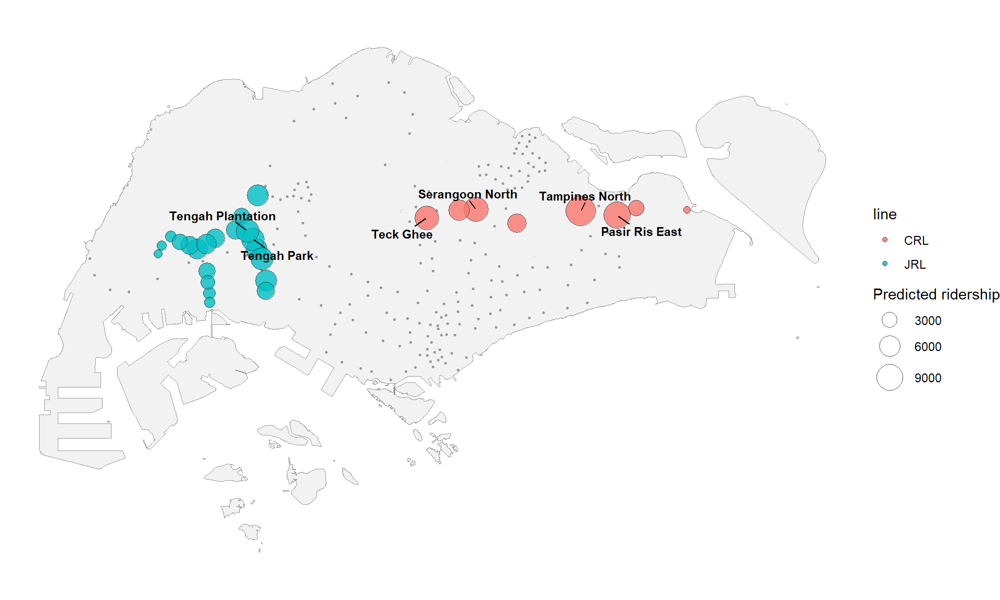
NoteAnalysis
- The Jurong Region Line stations form a loop in the west, and the Cross Island Line stations run in a line across the east.
- The largest circles are in the east, around Tampines North and Pasir Ris East. The Jurong Region Line has no station of that size, and its largest are Tengah Park and Tengah Plantation in the centre of the loop.
9 Impact on the Existing Stations
The predictions of section 8 are compared with the predictions for the network as it stands today. Both sides come from the same model, so the difference between them is the effect of the 29 new stations.
9.1 Change in the Ridership of Each Station
The arrivals predicted for the 184 existing stations in section 7 are compared with the arrivals predicted for the same stations in the 213 station network.
impact <- station_pred %>%
transmute(station_code = destination, station_name, arriving_before = predicted) %>%
left_join(pred_all %>% select(destination, starting_after = starting,
arriving_after = arriving),
by = c("station_code" = "destination")) %>%
mutate(starting_before = ridership$trips_from[match(station_code, ridership$station_code)],
ridership_before = starting_before + arriving_before,
ridership_after = starting_after + arriving_after,
change = (ridership_after - ridership_before) / ridership_before)
impact %>%
summarise(stations = n(),
arriving_before = round(sum(arriving_before)),
arriving_after = round(sum(arriving_after)),
ridership_before = round(sum(ridership_before)),
ridership_after = round(sum(ridership_after)),
median_change = round(median(change), 3)) %>%
print(width = Inf)# A tibble: 1 × 6
stations arriving_before arriving_after ridership_before ridership_after
<int> <dbl> <dbl> <dbl> <dbl>
1 184 570993 519382 1141986 1001817
median_change
<dbl>
1 -0.079
NoteAnalysis
- The arrivals at the 184 existing stations fall from 570,993 to 519,382, and their total ridership from 1,141,986 to 1,001,817. The median station loses 7.9 per cent of its ridership.
The number of stations affected by more than a tenth and more than a quarter is counted.
impact %>%
summarise(losing_more_than_10_percent = sum(change < -0.10),
losing_more_than_25_percent = sum(change < -0.25),
gaining = sum(change > 0))# A tibble: 1 × 3
losing_more_than_10_percent losing_more_than_25_percent gaining
<int> <int> <int>
1 51 16 0
NoteAnalysis
- No existing station gains ridership. The new stations take trips from the stations around them, and the total is held constant.
- 51 of the 184 stations lose more than a tenth of their ridership, and 16 lose more than a quarter.
The ten most affected stations are listed:
impact %>%
slice_min(change, n = 10) %>%
transmute(station_name, ridership_before = round(ridership_before),
ridership_after = round(ridership_after), change = round(change, 3))# A tibble: 10 × 4
station_name ridership_before ridership_after change
<chr> <dbl> <dbl> <dbl>
1 Lakeside 13715 5311 -0.613
2 Pioneer 12527 5019 -0.599
3 Boon Lay 12733 5122 -0.598
4 Tuas Link 2131 932 -0.563
5 Chinese Garden 7155 3290 -0.54
6 Changi Airport 1950 961 -0.507
7 Bukit Batok 10593 6099 -0.424
8 Bukit Gombak 7992 4736 -0.407
9 Pasir Ris 12003 7336 -0.389
10 Jurong East 12013 7506 -0.375
NoteAnalysis
- The most affected stations are in the west, where the Jurong Region Line runs. Lakeside loses 61.3% of its ridership, Pioneer 59.9% and Boon Lay 59.8%, and each falls from above 12,500 trips to about 5,100.
- Pasir Ris loses 38.9%. It is one of the seven interchanges that the Cross Island Line joins, and Pasir Ris East is predicted to take part of its catchment.
- The figure for Changi Airport should be read with care. Its ridership before the new stations is only 1,950 trips, and its catchment holds almost no HDB housing, which section 8.1 shows the demand estimate handles poorly.
The three least affected stations are listed:
impact %>%
slice_max(change, n = 3) %>%
transmute(station_name, ridership_before = round(ridership_before),
ridership_after = round(ridership_after), change = round(change, 3))# A tibble: 3 × 4
station_name ridership_before ridership_after change
<chr> <dbl> <dbl> <dbl>
1 Admiralty 15536 15146 -0.025
2 Khatib 13609 13259 -0.026
3 Sembawang 15644 15209 -0.028
NoteAnalysis
- The least affected stations are in the north, furthest from both new lines. Admiralty, Khatib and Sembawang each lose under 3 per cent of their ridership.
The change is mapped. The proposed stations are drawn as crosses:
impact_map <- stations_existing %>%
left_join(impact %>% select(station_code, change), by = "station_code")
ggplot() +
geom_sf(data = sg_boundary, fill = "grey95", colour = "grey60", linewidth = 0.2) +
geom_sf(data = impact_map, aes(colour = change), size = 2.5) +
geom_sf(data = stations_proposed, shape = 4, size = 1.8, colour = "grey25") +
scale_colour_gradient(low = "#c0392b", high = "grey80",
name = "Change in ridership") +
theme_void()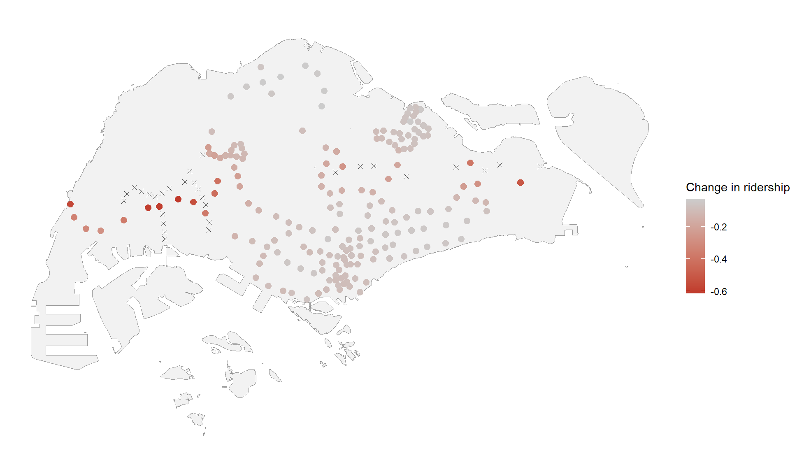
NoteAnalysis
- The darkest points lie along the western corridor, where the crosses marking the proposed stations are closest together. A second group of affected stations runs along the eastern end of the Cross Island Line.
- The stations in the north and in the centre of the island are barely affected, and most of the points there are pale.
9.2 Market Areas of the Stations
The residential demand of section 8.1 gives every HDB building a share for each station. The share going to the 29 proposed stations shows which parts of the island the new lines serve.
weight_all <- exp(-beta_fit$minimum * hdb_dist_km)
prob_all <- weight_all / rowSums(weight_all)
proposed_cols <- which(stations_all$status == "Proposed")
hdb_market <- hdb_points %>%
mutate(new_share = rowSums(prob_all[, proposed_cols]),
nearest_before = stations_all$station_code[existing_cols][
max.col(-hdb_dist_km[, existing_cols])],
nearest_after = stations_all$station_code[max.col(-hdb_dist_km)])
hdb_market %>%
st_drop_geometry() %>%
summarise(buildings = n(),
median_new_share = round(median(new_share), 3),
over_half = sum(new_share > 0.5),
over_quarter = sum(new_share > 0.25)) buildings median_new_share over_half over_quarter
1 13436 0.01 1913 3379
NoteAnalysis
- Most HDB buildings are barely affected. The median building sends 1 per cent of its area to the proposed stations.
- The effect is concentrated instead: 1,913 of the 13,436 buildings send more than half of their area to a proposed station, and 3,379 send more than a quarter.
The buildings whose nearest station becomes one of the proposed stations are counted, together with their share of the total HDB area.
hdb_market %>%
st_drop_geometry() %>%
summarise(switching = sum(nearest_after %in% stations_all$station_code[proposed_cols]),
area_share = round(sum(area_m2[nearest_after %in%
stations_all$station_code[proposed_cols]]) /
sum(area_m2), 3)) switching area_share
1 2112 0.161
NoteAnalysis
- 2,112 buildings are closer to a proposed station than to any existing one, and they hold 16.1 per cent of the total HDB floor area of the island.
The share of each building going to a proposed station is mapped:
ggplot() +
geom_sf(data = sg_boundary, fill = "grey97", colour = "grey60", linewidth = 0.2) +
geom_sf(data = hdb_market %>% arrange(new_share), aes(colour = new_share), size = 0.4) +
geom_sf(data = stations_proposed, shape = 4, size = 1.8, colour = "grey25") +
scale_colour_gradient(low = "grey85", high = "#c0392b",
name = "Share going to a\nproposed station") +
theme_void()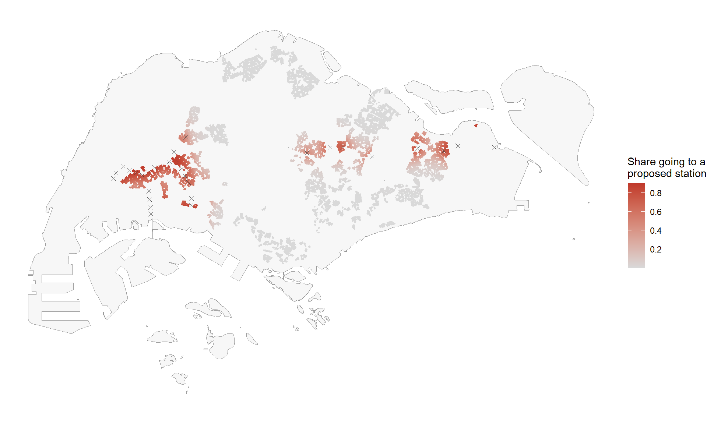
NoteAnalysis
- The affected buildings form three groups. The largest is in the west around Tengah and Jurong, the second lies in the centre along the middle of the Cross Island Line, and the third is in the east around Tampines and Pasir Ris.
- Most of the island is pale, including the whole of the north and the south centre. The new lines reach housing that the existing network already passes in those areas.
The existing stations that lose the most buildings are listed:
hdb_market %>%
st_drop_geometry() %>%
filter(nearest_after %in% stations_all$station_code[proposed_cols]) %>%
count(nearest_before, sort = TRUE) %>%
slice_head(n = 8) %>%
left_join(names_lookup, by = c("nearest_before" = "station_code")) %>%
transmute(station_name, buildings = n) station_name buildings
1 Pasir Ris 330
2 Pioneer 167
3 Lakeside 162
4 Chinese Garden 150
5 Boon Lay 144
6 South View 136
7 Jurong East 129
8 Tampines East 124
NoteAnalysis
- Pasir Ris loses the most buildings, at 330. Six of the other seven are in the west, where the Jurong Region Line runs: Pioneer, Lakeside, Chinese Garden, Boon Lay, South View and Jurong East.
The proposed stations that gain the most buildings are listed:
hdb_market %>%
st_drop_geometry() %>%
filter(nearest_after %in% stations_all$station_code[proposed_cols]) %>%
count(nearest_after, sort = TRUE) %>%
slice_head(n = 8) %>%
left_join(stations_proposed %>% st_drop_geometry() %>%
select(station_code, station_name),
by = c("nearest_after" = "station_code")) %>%
transmute(station_name, buildings = n) station_name buildings
1 Tampines North 275
2 Pasir Ris East 265
3 Serangoon North 233
4 Tengah Plantation 162
5 Choa Chu Kang West 147
6 Teck Ghee 131
7 Gek Poh 100
8 Tengah Park 96
NoteAnalysis
- Tampines North gains the most buildings, at 275, followed by Pasir Ris East at 265 and Serangoon North at 233. These are the same three stations with the highest predicted ridership in section 8.3, which shows that their predictions rest on the residential area they take over.
9.3 Comparison with the Competing Destinations Model
Section 6.8 sets the competing destinations model aside for the predictions, because its access variable changes when stations are added. This section reports what it predicts, so the effect of that choice can be seen. The access of each station is recalculated over the 213 stations.
si_all <- si_all %>%
mutate(attraction = bus_stops + education + retail + health + 1)
comp_access_all <- si_all %>%
group_by(origin) %>%
summarise(access = sum(attraction / distance), .groups = "drop")
si_all <- si_all %>%
mutate(ln_comp = log(comp_access_all$access[match(destination, comp_access_all$origin)]))
sum(is.na(si_all$ln_comp))[1] 0The arrivals are predicted with the competing destinations model, both for the 213 station network and for the network as it stands:
si_all <- si_all %>%
mutate(p_comp = predict_si(mci_comp$par, si_all, vars6, "exp"),
comp_trips = trips_from_new * p_comp)
comp_after <- si_all %>%
group_by(destination) %>%
summarise(arriving_comp = sum(comp_trips), .groups = "drop")
comp_before <- si_existing %>%
mutate(pred_trips = trips_from * p_mci_comp) %>%
group_by(destination) %>%
summarise(arriving_comp_before = sum(pred_trips), .groups = "drop")The predictions for the 29 proposed stations are compared under the two models.
compare_proposed <- pred_all %>%
filter(status == "Proposed") %>%
select(destination, station_name, line, starting, chosen = ridership) %>%
left_join(comp_after, by = "destination") %>%
mutate(competing = starting + arriving_comp,
ratio = competing / chosen)
compare_proposed %>%
summarise(stations = n(),
total_chosen = round(sum(chosen)),
total_competing = round(sum(competing)),
pearson = round(cor(chosen, competing), 3),
spearman = round(cor(chosen, competing, method = "spearman"), 3)) %>%
print(width = Inf)# A tibble: 1 × 5
stations total_chosen total_competing pearson spearman
<int> <dbl> <dbl> <dbl> <dbl>
1 29 140169 133573 0.979 0.975
NoteAnalysis
- The two models agree closely on the proposed stations. The correlation between the two sets of predictions is 0.979 and the rank correlation is 0.975.
- The competing destinations model predicts 133,573 trips in total against 140,169, which is about 5 per cent lower.
ggplot(compare_proposed, aes(chosen, competing)) +
geom_abline(slope = 1, intercept = 0, colour = "grey50", linetype = "dashed") +
geom_point(aes(colour = line), size = 2) +
labs(x = "Predicted ridership, chosen model",
y = "Predicted ridership, competing destinations model",
colour = "Line") +
theme_minimal()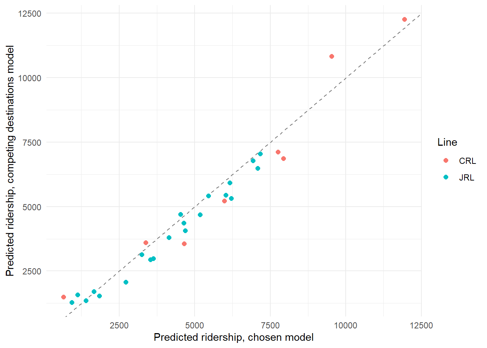
NoteAnalysis
- Almost every station lies close to the dashed line, so the choice between the two models changes little for most of the proposed stations.
- The stations furthest from the line are the two Cross Island Line stations at the top right and the points at the bottom left, where the competing destinations model predicts more.
The four stations with the largest difference in each direction are listed below.
bind_rows(compare_proposed %>% slice_max(ratio, n = 4),
compare_proposed %>% slice_min(ratio, n = 4)) %>%
transmute(station_name, line, chosen = round(chosen), competing = round(competing),
ratio = round(ratio, 2))# A tibble: 8 × 5
station_name line chosen competing ratio
<chr> <chr> <dbl> <dbl> <dbl>
1 Aviation Park CRL 655 1493 2.28
2 Nanyang Crescent JRL 1123 1582 1.41
3 Peng Kang Hill JRL 935 1277 1.37
4 Pasir Ris East CRL 9527 10829 1.14
5 Tukang JRL 2724 2064 0.76
6 Defu CRL 4654 3566 0.77
7 Enterprise JRL 3635 2990 0.82
8 Jurong Hill JRL 1847 1540 0.83
NoteAnalysis
- The competing destinations model predicts more at the isolated stations. Aviation Park rises from 655 to 1,493, Nanyang Crescent from 1,123 to 1,582 and Peng Kang Hill from 935 to 1,277. These stations have few other stations near them, so they face little competition under that model.
- It predicts less at the stations that sit among other new stations. Tukang falls from 2,724 to 2,064, Defu from 4,654 to 3,566, and Enterprise from 3,635 to 2,990.
The effect on the existing stations is compared under the two models.
compare_existing <- impact %>%
select(station_code, station_name, change) %>%
left_join(comp_before, by = c("station_code" = "destination")) %>%
left_join(comp_after, by = c("station_code" = "destination")) %>%
mutate(starting_before = ridership$trips_from[match(station_code, ridership$station_code)],
starting_after = pred_all$starting[match(station_code, pred_all$destination)],
before_comp = starting_before + arriving_comp_before,
after_comp = starting_after + arriving_comp,
change_comp = (after_comp - before_comp) / before_comp)
compare_existing %>%
summarise(median_chosen = round(median(change), 3),
median_competing = round(median(change_comp), 3),
losing_over_25_chosen = sum(change < -0.25),
losing_over_25_competing = sum(change_comp < -0.25),
gaining_competing = sum(change_comp > 0)) %>%
print(width = Inf)# A tibble: 1 × 5
median_chosen median_competing losing_over_25_chosen losing_over_25_competing
<dbl> <dbl> <int> <int>
1 -0.079 -0.043 16 21
gaining_competing
<int>
1 38
NoteAnalysis
- The two models disagree about the effect on the existing stations. The median station loses 4.3 per cent of its ridership under the competing destinations model against 7.9 per cent under the chosen model.
- The losses are also more concentrated. 21 stations lose more than a quarter of their ridership against 16, and 38 stations gain ridership, where none gains under the chosen model.
The six stations most affected under the competing destinations model are listed:
compare_existing %>%
slice_min(change_comp, n = 6) %>%
transmute(station_name, chosen = round(change, 3), competing = round(change_comp, 3))# A tibble: 6 × 3
station_name chosen competing
<chr> <dbl> <dbl>
1 Boon Lay -0.598 -0.685
2 Pioneer -0.599 -0.663
3 Lakeside -0.613 -0.655
4 Chinese Garden -0.54 -0.644
5 Jurong East -0.375 -0.603
6 Joo Koon -0.369 -0.542
NoteAnalysis
- Both models name the same stations in the west as the most affected, but the competing destinations model makes the losses deeper. Boon Lay falls by 68.5 per cent against 59.8 per cent, and Jurong East by 60.3 per cent against 37.5 per cent.
The four stations that gain the most under that model are listed:
compare_existing %>%
slice_max(change_comp, n = 4) %>%
transmute(station_name, chosen = round(change, 3), competing = round(change_comp, 3))# A tibble: 4 × 3
station_name chosen competing
<chr> <dbl> <dbl>
1 Bras Basah -0.087 0.071
2 Esplanade -0.087 0.062
3 City Hall -0.079 0.056
4 Bencoolen -0.079 0.055
NoteAnalysis
- The four stations that gain the most are all close to the city centre, and each gains between 5.5 and 7.1 per cent. The 29 new stations all lie away from the centre, so the access measure rises most at the stations on the edge of the network and the central stations become relatively more attractive.
- The two models therefore give the same answer to the second objective and different answers to the third. The predicted ridership of the proposed stations barely depends on which of the two is used, while the predicted effect on the existing stations does.
10 Limitations
- The ridership data records how many trips run between each pair of stations. It holds no information about the travellers or their reasons for travelling. The study covers the weekday morning peak of three months only, and the findings do not extend to other parts of the day or to weekends.
- Nothing in the data counts jobs, which are what draws most trips in the morning peak. The attraction of a station is measured instead by the facilities around it and by its distance from the city centre. Both are rough substitutes.
- The residents around a station are measured by HDB building footprints. Private housing is left out, and the floor area of a building is unknown. Areas where people work rather than live are not represented at all.
- Distance is measured in straight lines between stations. The rail network, the travel time, and the need to change lines play no part in the model.
- The proposed stations have no observed ridership. Their residential demand and their attraction are both inferred from relationships fitted on the existing stations, and those relationships may not hold in areas that are still being built.
- The model explains part of the variation in station ridership, and its errors still follow a spatial pattern across the island. The predicted figures should be read as an indication of the scale of a station’s ridership, not as a forecast. The total number of trips is also held constant, which assumes that the new lines draw their riders from the existing stations and attract no additional travel.
11 Conclusion
A spatial interaction model of station-level ridership is calibrated on the 33,672 pairs formed by the 184 existing stations. Nine models are compared. The chosen one gives each attraction variable its own exponent, measures the pull of the city centre, and weights distance by an exponential decay of 0.109 for each kilometre. It reproduces the trips ending at a station with a squared correlation of 0.218, and it performs as well on origins held out of the calibration as on those used for it.
Applied to the proposed network, the model gives the 29 new stations 140,169 trips per weekday in the morning peak, about 12% of the ridership of the network as it stands. The 21 Jurong Region Line stations account for 88,333 of these and the 8 Cross Island Line stations for 51,835. Station for station the Cross Island Line is the busier of the two, with a median of 6,871 against 4,528. Tampines North, Pasir Ris East and Serangoon North are the three busiest.
The new stations draw their riders from the stations around them. The ridership of the existing stations falls from 1,141,986 to 1,001,817 trips, with no station gaining. The losses concentrate in the west along the Jurong Region Line, where Lakeside, Pioneer and Boon Lay each lose about 60%. The market areas show how this happens: 2,112 HDB buildings, holding 16.1% of the island’s HDB footprint area, lie closer to a new station than to any existing one.
The predictions and the impact estimates carry different weight. The predicted ridership of the proposed stations holds at a correlation of 0.979 between the two best models, while their estimates of the loss at the existing stations differ by nearly half. The predictions are best used to compare stations with one another and to show where the new lines overlap the network that already exists.
12 References
Chelvan, V. P. (2026, January 30). More rides on MRT in 2025 as LRT use fell; bus ride numbers still below pre-Covid-19 levels. The Straits Times. https://www.straitstimes.com/singapore/transport/more-people-used-mrt-in-2025-as-lrt-ridership-falls-bus-numbers-still-below-pre-covid-levels
Fotheringham, A. S. (1983). A new set of spatial-interaction models: The theory of competing destinations. Environment and Planning A, 15(1), 15–36. https://doi.org/10.1177/0308518X8301500103
Guerra, E., Cervero, R., & Tischler, D. (2012). Half-mile circle: Does it best represent transit station catchments? Transportation Research Record, 2276, 101–109. https://doi.org/10.3141/2276-12
Land Transport Authority. (2025, January 24). Hume Station to open on 28 February 2025. https://www.lta.gov.sg/content/ltagov/en/newsroom/2025/1/news-releases/hume_station_to_open.html
Land Transport Authority. (2026a, May 14). Circle Line Stage 6 to open for public preview on 4 July 2026. https://www.lta.gov.sg/content/ltagov/en/newsroom/2026/5/news-releases/circle-line-stage-6-to-open-for-public-preview-on-4-july-2026.html
Land Transport Authority. (2026b, March 4). Factsheet: The next phase of rail development. https://www.lta.gov.sg/content/ltagov/en/newsroom/2026/3/news-releases/next-phase-of-rail-development.html
Land Transport Guru. (2026a, May 30). Circle Line Stage 6 to commence service on 12 Jul 2026. https://landtransportguru.net/circle-line-stage-6-start-service-12jul26/
Land Transport Guru. (2026b, September 5). Stevens MRT Station. https://landtransportguru.net/stevens-station/
Ministry of Manpower. (2025, June 16). Public holidays for 2026. https://www.mom.gov.sg/newsroom/press-releases/2025/0616-public-holidays-for-2026
Wieland, T. (2017). Market area analysis for retail and service locations with MCI. The R Journal, 9(1), 298–323. https://journal.r-project.org/archive/2017/RJ-2017-020/RJ-2017-020.pdf